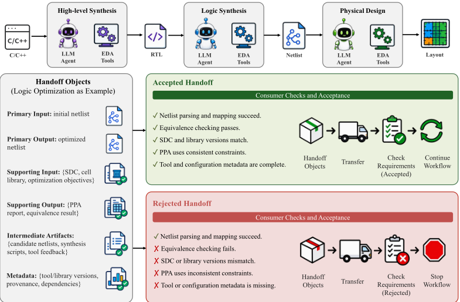
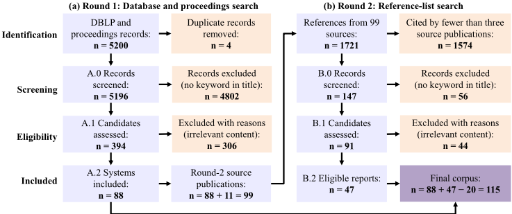
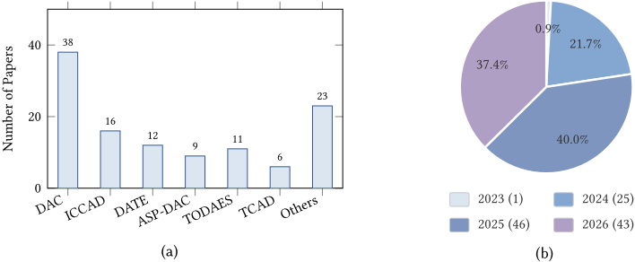
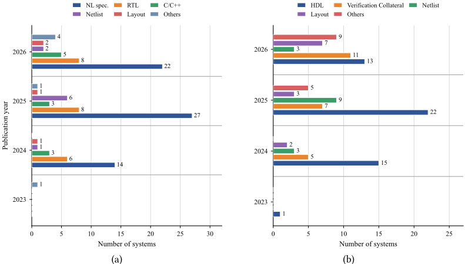
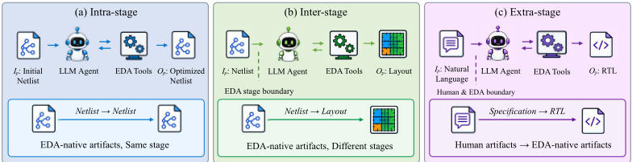
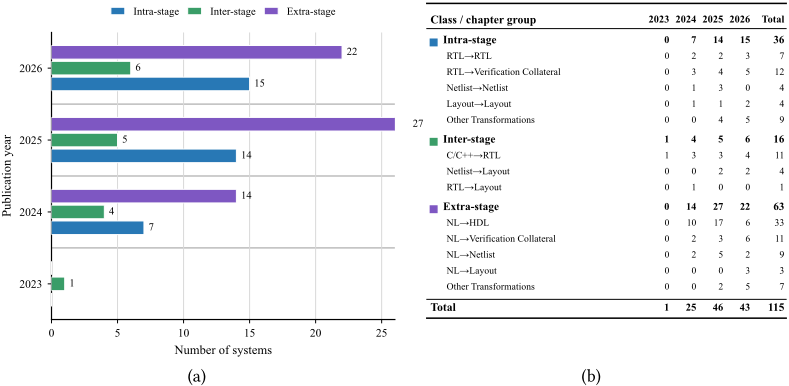
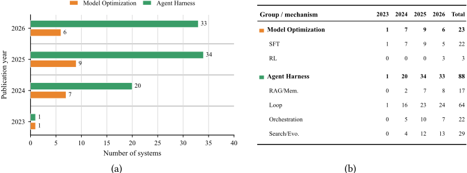
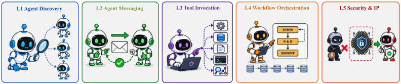

Agentic 电子设计自动化（EDA）：一种 Handoff（交接）视角
该综述针对 LLM Agent 大量进入电子设计自动化（EDA）流程后研究图景碎片化、缺乏统一分析视角的问题，提出以“生产者-消费者 handoff”为组织原则的框架：每次交接被建模为包含主输入/输出、支撑输入/输出、中间产物与元数据的对象集合，并按主输入来源与主输出消费边界把 115 个代表性系统分为 Intra-stage、Inter-stage、Extra-stage 三类。机制统计显示 88/115 系统采用 agent harness 运行时机制（loop 最常见），仅 23 个做模型参数优化，表明当前趋势是给模型加外部运行时结构而非微调模型。论文还盘点开放基准资源，提出验收证据、语义保持、公平比较等开放问题，并给出覆盖 Agent 发现、消息、工具调用、工作流编排与安全 IP 的五层 Agentic EDA 协议路线图。其 handoff 对象模型、“生产者成功不等于消费者接受”的验收原则与评测报告要素清单，对团队的 Agent 可靠性设计与评测实践有直接借鉴价值。
LLM-based Agent 进入 EDA（电子设计自动化）流程后，相关研究高度碎片化；已有综述按应用类别、输入输出模态、设计阶段或模型架构组织，均未围绕“生产者到消费者的 handoff 及其对象”展开，导致 Agent 产出在交接边界处需满足的接口、语义、配置与版本验收要求被隐没。论文要建立统一视角对 115 个 agentic EDA 系统进行分类与比较，并识别共享基础设施缺口与可信性（trustworthy）问题。
提出 handoff 形式化：一次交接涉及对象集合 R = (Ip, Op, Is, Os, Am; M)，即主输入/输出、支撑输入/输出、中间产物与元数据；以主输入来源（机器可读 EDA 对象 vs 人类意图）与主输出消费边界（同阶段复用 vs 跨表示变更）划分 Intra-stage / Inter-stage / Extra-stage 三类。机制维度区分模型优化（SFT/RL）与 agent harness（retrieval/memory、loop、orchestration、search/evolution）。采用两轮 PRISMA 式文献筛选构建 115 系统语料，逐系统编码 handoff 对象角色、机制与基准，最后提出五层协议路线图（Agent 发现、消息、工具调用、工作流编排、安全与 IP）与开放研究问题。
最终语料包含 115 个 agentic EDA 系统（88+47−20），2025–2026 年系统占 77.4%；按类分布为 Extra-stage 63、Intra-stage 36、Inter-stage 16
88/115 系统使用至少一种 agent harness 机制，仅 23 个涉及模型参数优化；loop 最常见（2024–2026 分别为 16/23/24 个系统），search/evolution 为 4/12/13，retrieval/memory 为 2/7/8，orchestration 为 5/10/7
全语料中仅 PRO-V-R1、drcAgent、HRL-Topo 三个系统通过 RL 更新 LLM/VLM 策略；SFT 共 22 个系统
Intra-stage 36 系统中 31 个（86.1%）使用 harness、26 个（72.2%）有显式 loop；Extra-stage 63 系统中 44 个（69.8%）使用 harness、28 个（44.4%）有显式 loop
验收对象观察：Intra-stage 36 系统中 34 个报告 checker 输出但仅 3 个有显式 reference 输入；Extra-stage 63 系统中 52 个报告 checker 输出、仅 2 个有 reference 输入
输出类型多元化：HDL 占 2024 年系统的 60% 降至 2026 年的 30%，Verification Collateral 从 5 增至 11 个系统，Layout 从 2 增至 7 个
区别于既有 LLM4EDA 综述按应用类别、模态、设计阶段或模型架构组织，本文首次以 producer-to-consumer handoff 为组织原则：用主输入-输出对决定三分类，把支撑/中间对象与元数据作为主要分析维度，并将 Agent 产出显式关联到下游消费者的验收要求；同时给出机制级统计（harness vs 模型优化）、开放基准清单与五层 Agentic EDA 协议路线图。
相关度级别：medium
命中能力域：3.3 Agent 架构与工具使用 | 3.4 多智能体协作 | 3.5 评测与可靠使用
理由：论文的应用域是电子设计自动化（芯片/硬件设计流程），115 个被调研系统、其基准（VerilogEval、RTLLM 等）与验收检查器均服务于 EDA 场景，团队无法直接复用任何系统、基准或数据，因此不评为 high。但其分析框架与结论直接落在团队 3.3/3.4/3.5 的核心议题上：对 agent harness（retrieval/memory、loop、orchestration、search/evolution）与模型优化的 115 系统实证统计，为团队“用好模型而非训练模型”的技术路线提供了跨领域证据；handoff 对象模型与“生产者成功不等于消费者接受”的验收证据原则，可迁移到团队 Agent 产出（代码/测试/文档）交给下游工具或人工审查的可靠性设计；五层协议路线图与评测报告六要素清单可作为团队多 Agent 通信约定与内部评测规范的参照。整体属于“方法有借鉴、但不直接命中团队技术栈”。
建议动作：作为方法参考存档
arXiv:2606.19795v2 [cs.SE] 2026年9月6日
JIAWEI LIU，香港中文大学，香港
PEIYI HAN，香港中文大学，香港
YUNTAO LU，香港中文大学，香港
SU ZHENG，香港中文大学，香港
FENGYU YAN，概伦电子（Primarius Technologies），中国
BEI YU，香港中文大学，香港
电子设计自动化（Electronic Design Automation, EDA）具有多阶段、交接（handoff）密集的特点，依赖于人类、设计产物与多种工具之间的传递。基于大语言模型（Large Language Model, LLM）的 Agent 如今已参与到这些传递之中，但由此形成的研究图景高度碎片化，缺乏统一的视角。本综述以“主要输入-输出对”作为组织视角：针对每个 Agent 系统，我们分析其主要、辅助与中间交接对象，并依据其主要输入的来源（provenance）与主要输出的消费边界对其进行分类。阶段内（intra-stage）系统作用于单一 EDA 阶段内部的对象；阶段间（inter-stage）系统将 EDA 原生产物（EDA-native artifacts）转换为下游阶段可用的形式；阶段外（extra-stage）系统则将人类意图转化为 EDA 产物。基于该分类体系，我们调研了 115 个代表性系统，并从研究趋势、基准测试（benchmark）与模型机制等多个维度对其进行考察。最后，我们勾勒了智能体化 EDA（Agentic EDA）的协议路线图，并讨论了未来研究中有待解决的开放问题。
CCS 概念：· 硬件（Hardware）→ 电子设计自动化（Electronic Design Automation）；· 计算方法学（Computing methodologies）→ 机器学习（Machine learning）
附加关键词与短语：电子设计自动化，基于 LLM 的 Agent
Jiawei Liu, Peiyi Han, Yuntao Lu, Su Zheng, Fengyu Yan 与 Bei Yu. 2026. 智能体化电子设计自动化：一种交接视角. 1, 1（2026 年 9 月），46 页. https://doi.org/10.1145/nnnnnnn.nnnnnnn
电子设计自动化（EDA）本质上是一个多阶段、交接密集的过程。例如，数字设计要依次经过综合、布局、布线以及迭代式的时序收敛 [1, 2]，而模拟设计则通过原理图级仿真和版图后仿真进行评估，并通过设计规则检查（DRC）和版图与原理图一致性验证（LVS）加以核查。在每次交接中，一个或多个对象会从生产者传递给消费者，以支持后续的工程操作。这些对象在整个任务中扮演着不同的角色：核心的设计或验证对象可能是主要输入或输出，约束和配套材料可能是辅助输入或输出，而脚本、计划、报告或检查点则可能是中间产物。每一个
作者联系信息：Jiawei Liu，香港中文大学，香港；Peiyi Han，香港中文大学，香港；Yuntao Lu，香港中文大学，香港；Su Zheng，香港中文大学，香港；Fengyu Yan，Primarius Technologies，中国；Bei Yu，香港中文大学，香港。
允许免费制作本作品全部或部分的数字或硬拷贝以供个人或课堂使用，前提是这些拷贝的制作与分发不以营利或商业优势为目的，且拷贝首页带有本声明及完整的引用信息。本作品中归 ACM 以外各方所有的组件，其版权必须得到尊重。允许在注明出处的情况下进行摘录。若要以其他方式复制、重新发布、上传至服务器或重新分发至列表，则需要事先获得特定许可和/或支付费用。请向 permissions@acm.org 申请许可。
© 2026 ACM.
ACM XXXX-XXXX/2026/9-ART
被传递的对象及其元数据必须在多次工具调用之间保持相互一致 [3, 4]。例如，一个布局布线任务可能将网表作为其主要输入，将 SDC、工艺数据和库数据作为辅助输入，将实现后的版图作为其主要输出，将签核报告作为辅助输出，并将各阶段检查点作为中间产物。即使主要设计产物已经存在，一个陈旧的 SDC 文件、一个不兼容的库版本或一个不完整的检查点也可能导致执行失败、时序违例或不可复现的结果。
从传统 EDA 到机器学习辅助 EDA 与智能体化 EDA。传统 EDA 将设计组织为一系列确定性算法、脚本化的工具调用以及经工程师审查的阶段交接（handoff）。工程师编写约束、启动工具、检查报告并修改产物，而工作流意图与验收决策在很大程度上仍编码于脚本和专家实践之中。面向 EDA 的机器学习（Machine Learning for EDA, ML4EDA）已经提升了单个任务的质量与效率，包括布局 [1]、时序预测与优化 [2] 以及高层次综合（HLS）指令搜索 [11]。这些方法可以直接嵌入 EDA 流程，其输出可被下游工具消费。然而，它们通常在预定义的任务接口、数据模式、工艺设置和优化目标之下运行。近期的大语言模型（Large Language Models, LLMs）提供了以指令为条件的生成、上下文适应，以及整合来自规格说明、代码、日志和工具反馈的异构信息的能力 [12, 13]。
尽管具备这些能力，早期的 LLM4EDA 工作仍局限于建议性用途，例如单轮对话与问答。近来，基于 LLM 的智能体（agent）技术的进展使智能体能够进行规划、调用 EDA 工具，并根据反馈修正其动作，从而执行诸如修复硬件描述 [14, 15] 以及自动化并优化多阶段 EDA 流程 [3, 4] 等专门任务。这一范式被称为智能体化 EDA（agentic EDA），厂商资料中描述了相关的商业产品，如表 1 所总结。
对于智能体化 EDA 系统而言，当智能体将一个或多个对象交付给某个消费方以进行后续工程动作时，便发生一次交接。智能体的引入使得此类传递比在传统 EDA 系统中更为频繁。由于 LLM 的输出可能不正确或不完整，接收方工具或工程师必须判断所传递的对象是否满足适用的接口、语义、配置和版本要求。
此次传递所涉及的产物与元数据即为交接对象（handoff objects）。在图 1 的逻辑优化示例中，它们包括主输入与主输出、辅助输入与输出、中间产物以及元数据。如果等价性检查失败，物理设计消费方将拒绝优化后的网表。
智能体化电子设计自动化（EDA）系统的差异体现在其主输入源自何处，以及其主输出在何处被消费。由这两个维度可以划分出三类系统：阶段内（Intra-stage）、阶段间（Inter-stage）和阶段外（Extra-stage）。阶段内系统消费机器可读的 EDA 领域对象，并产生在同一设计阶段内被检查和复用的输出。例如，RTLFixer [14] 消费并返回寄存器传输级（RTL），而图 1 中的网表优化示例同样属于阶段内系统，因为其主输入和主输出都是在逻辑综合中使用的网表。阶段间系统跨越设计阶段的表示边界，因此下游工具必须接受新的表示。例如，ChatEDA [3] 编排从 RTL 一直到 GDSII 的流程。阶段外系统以源自人类的文本、文档或类似材料为起点，其主输出是机器可消费的 EDA 产物。例如，VerilogCoder [16] 根据自然语言规格说明生成 RTL。
已有的基于大语言模型（LLM）的 EDA 综述按应用类别、输入-输出模态、设计阶段、模型架构或设计领域来组织文献。没有一篇综述围绕生产者到消费者的交接（handoff）及其所涉及的对象来组织智能体式系统。表 2 从主题范围、智能体中心性、全流程覆盖、系统性的定量或基准测试（benchmark）分析、路线图以及定义性特征等方面对代表性综述进行了比较。在表中，agent-centric 表示围绕智能体式多步工作流组织的综述。具体而言，覆盖完整设计流程的三篇相关综述如下：
| Vendor | Offering and Stated Scope |
|---|---|
| Synopsys | The Synopsys agentic AI stack [5] provides the infrastructure for agentic engineering workflows. AgentEngineer [6] supports agents that reason, plan, learn, execute, and coordinate across engineering tasks. A disclosed AgentEngineer workflow generates RTL from natural-language and formal specifications, runs lint checks, generates unit- level testbenches, and iteratively invokes EDA verification tools. |
| Cadence | ChipStack AI Super Agent [7] and AgentStack [8]: ChipStack supports agentic RTL design and verification workflows, including testbench generation, regression orches- tration, debugging, and automated repair. AgentStack is a head-agent orchestration layer covering physical design, custom and analog design, migration, and system-level workflows. |
| Siemens EDA | Fuse EDA AI Agent [9] and Questa One Agentic Toolkit [10]: Fuse provides multi-tool and multi-agent orchestration across semiconductor, 3D IC, PCB, verification, and manufacturing-signoff workflows. Questa One provides agentic workflows for RTL creation, lint, CDC analysis, verification planning, debugging, and RTL signoff, with integration into Fuse. |
| Vendor | Offering and Stated Scope |
| Survey | Source | LLM4EDA Scope | Agent- Centric | Full-Flow Scope | Quantitative Analysis | Roadmap | Characteristics |
|---|---|---|---|---|---|---|---|
| He et al., [12] Pan et al., [13] Chae et al., [17] Yang et al., [18] | TODAES'25 TODAES'25 ICCAD'25 CSUR'25 | ✓ ✓ ✓ ✓ | ✓ ✓ | ✓ ✓ | ✓ ✓ | I/O modality Design stages Analog/RF RTL Generation | |
| Fang et al., [19] Ghose et al., [20] Liu et al., [21] | TODAES'26 ISPD'26 ASP-DAC'26 | ✓ ✓ ✓ | ✓ | ✓ | ✓ | ✓ ✓ | Circuit FMs Physical design Verification |
| This survey | - | ✓ | ✓ | ✓ | ✓ | ✓ | Handoff |
| Survey | Source | LLM4EDA Scope | Agent- Centric | Full-Flow Scope | Quantitative Analysis | Roadmap | Characteristics |
这三篇综述描述了基于 LLM 的 EDA 系统做什么、在设计流程中的哪些环节运行，以及如何实现。然而，它们都没有以智能体式 EDA 作为叙事核心。每篇仅覆盖了有限的相关工作。它们的组织轴也未显式说明生成的产物由哪个消费者接收，以及在该边界处适用哪些验收要求。此外，面向特定领域的综述针对 RTL 代码生成 [18]、物理设计 [20]、模拟与射频（RF）设计 [17] 以及电路验证 [21] 对这些组织轴进行了细化。近期的专题研讨会（focus session）进一步描绘了物理设计 [24]、硬件测试生成 [25] 和设计规则检查 [26] 中的智能体式发展方向。一篇受邀的 DAC 2026 展望文章 [27] 阐述了 LLM 在整个前端设计中的挑战与机遇，而 Xu 等人 [28] 则对大模型在硬件设计中的能力与局限进行了基准测试。

与上述工作不同，本综述聚焦于智能体式 EDA，并以生产者到消费者的交接作为组织原则，由此引出三个核心问题：
这些问题分别在第 2 节（Q1）、第 3-5 节（Q2）和第 6 节（Q3）中得到解答。
Corpus Construction . We conducted a venue-focused, two-round literature search covering work published, accepted, or publicly available by the August 31, 2026 cutoff, following the PRISMA-style procedure in Figure 2. The first round searched publication venues directly. We collected DBLP

records for DAC, DATE, ASP-DAC, TCAD, and TODAES over 2024-2026 and for ICCAD over 2024-2025. ICCAD 2026 proceedings were not available by the cutoff. DAC 2026 records were supplemented from its official proceedings. The resulting 5,200 raw records were reduced to A.0 = 5,196 after four true duplicates were removed. Title screening with the keywords agent, agentic, LLM, large language model, code generation, and retrieval augmented generation (RAG) excluded 4,802 records and produced A.1 = 394 eligibility candidates. We then assessed each candidate against the following inclusion and exclusion criteria.
Inclusion and Exclusion Criteria . We included a study when (1) it presented an LLM-based system for an EDA task, (2) the LLM materially affected an engineering artifact or decision, and (3) that result entered a tool-execution, multi-agent, persistent-workflow, or explicit human-review handoff. We excluded surveys, benchmarks without an implemented agentic system, conventional ML4EDA methods, advisory QA systems without a downstream engineering action, one-shot prompting demonstrations, and reports lacking sufficient technical detail. Under these criteria, the first round excluded 306 irrelevant records and retained A.2 = 88 systems.
Corpus Supplement . The 88 systems from the first round may miss widely recognized work from other venues or preprints. To supplement such work, the second round broadened coverage through citation overlap. We scanned 99 unique source publications drawn from the A.2 systems, seven survey bibliographies [12, 13, 17-21], and five related focus-session, perspective, and panel papers [24-28], with duplicate publications counted once. Their locally extracted reference lists contained 1,721 unique normalized references. In this round, we regard a work as representative when it is cited by at least three distinct sources. Under this criterion, the set was reduced to B.0 = 147 records. We then repeated the first round's title screening and eligibility assessment. Title screening excluded 56 records. Among the 91 reports assessed for eligibility, 43 failed the inclusion criteria. ConfiBench, an eligible journal extension of CorrectBench, was consolidated into the same system lineage rather than counted as a separate entry. These 44 exclusions or consolidations yielded B.2 = 47 systems.
语料库合并。由于 A.2 中的一篇论文本身可能被多次引用，从而在 B.2 中再次被命中，我们将两轮得到的系统标识进行了合并，并去除了 20 个跨轮次的重叠。因此，最终语料库包含 115 个不同的智能体式 EDA 系统（88 + 47 - 20）。描述同一系统的论文被合并，除非较新版本引入了实质上不同的智能体架构。

趋势观察。图 3 记录了智能体式 EDA 研究的快速扩张。语料库规模从 2023 年的 1 个系统增长到 2024 年的 25 个和 2025 年的 46 个。2026 年的部分统计在 8 月 31 日截止时达到 43 个。2025-2026 年的 89 个系统占语料库的 77.4%。DAC 贡献了 38 个系统，其余 77 个则分布在其他核心与非核心发表渠道。
定位。本综述围绕生产者到消费者的交接（handoff）来组织智能体式 EDA 系统。主要输入-输出对决定了系统所属的分类类别，而辅助交接对象与中间交接对象则描述了整个过程中所使用和所产生的信息。这一视角既能识别系统之间的差异，也能识别整个语料库中共同存在的基础设施缺口。这些缺口为智能体式 EDA 指明了未来研究方向。
贡献。这一框架带来了四项贡献。第一，本综述利用生产者到消费者的交接，将 Agent 输出与接收方 EDA 阶段的验收要求联系起来。第二，本综述提出了由主要输入-输出对决定的三类分类体系：阶段内（Intra-stage）、阶段间（Inter-stage）和阶段外（Extra-stage）。第三，各类别章节将每个智能体式 EDA 系统的主要对象、辅助对象和中间对象作为主要分析维度，并以模型机制作为辅助分析维度加以补充。第四，本综述概述了未来研究方向，提出了开放性问题，并绘制了智能体式 EDA 通信协议的五层路线图。
结构安排。第 2 节介绍核心概念、三类分类体系、研究趋势与评估基准测试（benchmark）。第 3 节至第 5 节按类别介绍并讨论代表性工作。第 6 节提出路线图与未来研究方向。最后，第 7 节对本综述进行总结。
本节首先定义交接（handoff）及用于描述各系统的相关概念。随后，本节依据主要输入-输出对，将各系统划分为阶段内（Intra-stage）、阶段间（Inter-stage）与阶段外（Extra-stage）三类。模型优化与智能体执行框架（agent harness）则提供了一个独立的、基于机制的视角，随后给出基准测试（benchmark）清单。表 3 对定义中以及全篇综述中反复出现的 EDA 与 AI 术语进行了展开说明。
| EDA Terms.Term | EDA Terms.Definition | Term | Definition |
|---|---|---|---|
| ASIC | Application-Specific Integrated Circuit | DRC | Design-Rule Checking |
| DSE | Design-Space Exploration | DUT | Design Under Test |
| EDA | Electronic Design Automation | ERC | Electrical-Rule Checking |
| FPGA | Field-Programmable Gate Array | GDSII | Graphic Data System II Stream Format |
| HDL | Hardware Description Language | HLS | High-Level Synthesis |
| HPWL | Half-Perimeter Wirelength | IP | Intellectual Property |
| LVS | Layout Versus Schematic | NL | Natural Language |
| PCB | Printed Circuit Board | PDK | Process Design Kit |
| PPA | Power, Performance, And Area | QoR | Quality Of Results |
| RF | Radio Frequency | RTL | Register-Transfer Level |
| SDC | Synopsys Design Constraints | SPICE | Simulation Program With Integrated Circuit Emphasis |
| SVA | SystemVerilog Assertions | TCAD | Technology Computer-Aided Design |
| UVM | Universal Verification Methodology | VHDL | VHSIC Hardware Description Language |
| AI Terms | AI Terms | ||
| Term | Definition | Term | Definition |
| AI | Artificial Intelligence | VLM | Vision-Language Model |
| LLM | Large Language Model | ML | Machine Learning |
| ML4EDA | Machine Learning For EDA | RAG | Retrieval-Augmented Generation |
| RL | Reinforcement Learning | SFT | Supervised Fine-Tuning |
| EDA Terms.Term | EDA Terms.Definition | Term | Definition |
为了进行语料库编码与比较，我们区分交接（handoff）事件、其中涉及的对象，以及用于分类的主要输入-输出对。
交接。交接是一种事件，在此事件中，生产者使一个或多个对象可供消费者用于后续的工程操作。此处，生产者通常是智能体（agent），而消费者是 EDA 工具。当被传递的对象满足其接口、语义、配置与版本要求时，消费者即接受该交接。工具检查或人工评审提供验收证据，而溯源（provenance）与版本元数据则决定该证据是否适用于所交付的对象及执行环境。仅凭生产者一侧的成功并不能确立消费者的验收。
交接对象。一次交接可能涉及承担不同角色的多个对象。我们将交接对象的完整集合表示为 R = ( 𝐼 𝑝 , 𝑂 𝑝 , 𝐼 𝑠 , 𝑂 𝑠 , 𝐴 𝑚 ; 𝑀 )，其中：

在实践中，首先确定 ( 𝐼 𝑝 , 𝑂 𝑝 ) 这一对，随后按功能分配其余对象。因此，同一格式可能承担不同的角色。候选 RTL 在修订期间属于 𝐴 𝑚，只有当其作为被接受的结果交付时才成为 𝑂 𝑝。ChatEDA [3] 展示了这种分配方式。其主要输入-输出对为 RTL → 实现后的版图/GDSII。自然语言目标与平台设置属于 𝐼 𝑠，PPA 与验证报告属于 𝑂 𝑠，而计划、脚本、中间网表与检查点则属于 𝐴 𝑚。
趋势观察。图 4 显示，自然语言规范仍然是最大的主要输入类别，尽管到 2026 年，其余所有输入类型合计已几乎与之持平（22 个系统对 21 个系统）。输出的多样化更为显著：HDL 从占 2024 年系统的 60% 下降至 2026 年的 30%，而验证配套件（Verification Collateral）从 5 个系统增加到 11 个系统，版图（Layout）从 2 个增加到 7 个。
在 2.1 节所定义的主要输入-输出对的基础上，该分类法采用两个属性：𝐼 𝑝 的来源（provenance）与 𝑂 𝑝 的消费边界（consumer boundary）。前者区分机器可读的 EDA 领域对象与源自人类的意图或知识；后者区分同一阶段内的复用与被下游阶段接受的表示形式变更。辅助输入与输出、中间产物、元数据、LLM 架构、机制、基准测试（benchmark）以及证据强度仍属于描述性维度，并不决定主要类别。

归类规则。我们采用以下判定流程。
图 5 通过代表性的主要输入-输出对展示了这三个类别：同一阶段内的精化、跨阶段的表示形式变更，以及将源自人类的意图转化为 EDA 产物。
阶段内系统（Intra-stage Systems）。这类系统以机器可读的 EDA 领域对象作为主要输入。此类对象包括设计产物、EDA 工具代码或器件特性表征测量数据。其输出在同一阶段内得到检查并复用。该输出通常保持或局部精化输入的表示形式，但也可能是验证配套件或由该阶段消费的分析产品。消费方的接受依赖于阶段本地的检查器或优化器：编译、仿真、拟合误差、等价性、PPA 评估、lint/DRC、覆盖率，或等效的本地接受条件。代表性系统包括 RTL 修复与调试循环（RTLFixer [14]）、模拟电路尺寸设计（ADO-LLM [29]）、EDA 工具代码演化（MappingEvolve [30]）以及器件模型参数提取（ModelGen [31]）。
阶段间系统（Inter-stage Systems）。这类系统消费一种 EDA 原生表示，并产出另一种不同的设计阶段表示，后者必须被下游工具接受并消费。其接受依赖于跨工具执行、下游验证、QoR，或跨越表示边界的检查点一致性。代表性系统包括高层次综合（HLSPilot [32]）、ASIC 版图（HyperPlace [33]）、PCB 版图（PCBAgent [34]）以及 RTL 到 GDSII 的编排（ChatEDA [3]）。
阶段外系统（Extra-stage Systems）。这类系统以人类意图或知识作为主要输入，包括自然语言规范、查询或文档，并将其转化为机器可消费的 EDA 产物。其接受取决于规范的完整性、来源，以及在适当范围内对可查验来源的归因。代表性系统包括用于 RTL 生成的 VerilogCoder [16]、用于验证配套件的 AssertLLM [35]，以及用于基于检索的脚本生成的 ChatLS [36]。

趋势观察。图 6 显示，在高度不均衡的语料库中，三个类别均呈扩张态势。阶段内（intra-stage）系统从 2023 年的 0 个增至 2024 年的 7 个、2025 年的 14 个以及 2026 年的 15 个。阶段间（inter-stage）系统增长更为平缓，从 1 个依次增至 4 个、5 个和 6 个。阶段外（extra-stage）系统占 115 个系统中的 63 个，并自 2024 年起占据主导地位，从 2024 年的 14 个增至 2025 年的 27 个，到 2026 年 8 月 31 日的截止日期时为 22 个。
在根据主要输入-输出对完成系统分类之后，我们接下来刻画基于大语言模型（LLM）的 Agent 如何生成、评估并协调相关对象。在本综述中，基于 LLM 的 Agent 将 LLM 嵌入到电子设计自动化（EDA）工作流中，该工作流利用模型输出对工件（artifact）施加操作或调用工具。该工作流还可以检索资料来源、维护状态，并依据反馈修订输出。当视觉输入与多模态推理是这些行为不可或缺的组成部分时，我们将该系统描述为基于视觉语言模型（VLM）的系统。图 7 将这两类系统共用的六种机制归纳为模型优化（model optimization）与 Agent 框架（agent harness）两大类。
模型优化（Model Optimization）。模型优化会改变用于推理或生成的 LLM 或 VLM 的参数。监督微调（SFT）依据带标注的样本或经过验证的 Agent 轨迹来更新这些参数。强化学习（RL）则依据任务奖励来更新 LLM/VLM 策略，其中包括由 EDA 工具运行结果导出的奖励。单独训练并与语言模型配合使用的非 LLM 控制器或优化器属于专用后端（specialized backend），因为其训练并不会修改 LLM/VLM。
Agent 框架（Agent Harness）。遵循当前 Agent 系统实践中对 agent harness 的界定，我们用 Agent 框架指代围绕模型的运行时层，该层提供上下文与记忆、控制流、工具访问、编排以及候选选择 [37]。图 7 中的四种框架机制在不改变模型参数的情况下修改运行时行为。检索/记忆（retrieval/memory）为后续决策提供外部知识、先前示例、持久情景记忆或工作流状态。循环（loop）在任务内部实现“提议-行动-检查-反馈-修订”的循环。编排（orchestration）利用控制器、调度器或协调协议，在各 Agent、工具或工作流阶段之间分配工作并传递状态。搜索/进化（search/evolution）通过蒙特卡洛树搜索（MCTS）、贝叶斯优化、concolic 探索或进化算子等方法，在备选的工件、配置或工作流之间进行生成、评估与选择。只有当该过程由 Agent 所控制的工作流主导时，才将其编码为框架机制。完全在被调用的 EDA 工具内部执行的优化则不计入。
| Group / mechanism | Group / mechanism | 2023 | 2024 | 2025 | 2026 | Total |
|---|---|---|---|---|---|---|
| Model Optimization | 1 | 7 | 9 | 6 | 23 | |
| SFT | 1 | 7 | 9 | 5 | 22 | |
| RL | 0 | 0 | 0 | 3 | 3 | |
| Agent Harness | 1 | 20 | 34 | 33 | 88 | |
| RAG/Mem. | 0 | 2 | 7 | 8 | 17 | |
| Loop | 1 | 16 | 23 | 24 | 64 | |
| Orchestration | 0 | 5 | 10 | 7 | 22 | |
| Search/Evo. | 0 | 4 | 12 | 13 | 29 |
| Group / mechanism | Group / mechanism | 2023 | 2024 | 2025 | 2026 | Total |

这些标记可能同时出现，因为它们描述的是不同的操作。编译-修复（compile-repair）周期使用循环。对多个修复方案进行排序则额外使用搜索/进化。对任务和中间状态进行路由则增加编排。基于工具产生的奖励来更新 LLM/VLM 则增加强化学习（RL）。在图 7 中，harness（运行框架）各列从信息状态（检索/记忆）出发，经过时间控制（循环）和组织控制（编排），最终到达候选空间控制（搜索/进化）。趋势观察。图 7 表明，机制的增长集中在智能体 harness 上：115 个系统中有 88 个采用了 harness，相比之下采用模型优化的系统为 23 个。循环是最常见的机制，从 2023 年的 1 个系统增长到 2024—2026 年的 16 个、23 个和 24 个。搜索/进化从 2023 年的零个增长到 4 个、12 个和 13 个系统。检索/记忆从零增长到 2 个、7 个和 8 个，而编排从零增长到 5 个、10 个和 7 个。模型优化的年度覆盖数分别为 1 个、7 个、9 个和 6 个系统：监督微调（SFT）总体上占 22 个系统，而通过 RL 进行的 LLM/VLM 策略优化仅出现在 2026 年的三个系统中。这一对比表明，近期的系统更常增加外部运行时结构，而非更新语言模型参数。
可复用基准测试（benchmark）与评估范围。基准测试清单包括语料库论文引入或引用的开放资源。任务直接型基准测试按其主要任务族进行组织。多任务基准测试涵盖若干任务，而复用工作负载则提供在特定研究协议下评估的电路、内核或程序。面向训练的数据集支持模型拟合或预测。基准测试的使用要求提供留出任务（held-out task）和一项独立指定的验收标准。
表 4 按主要评估用途对任务直接型资源进行组织：先按三种交接类别划分，再按任务族划分。多任务基准测试、复用工作负载和面向训练的数据集构成横切分组。公开工件（public artifact）状态通过代码仓库、数据集卡片或原始发布页面加以核实。未确认具有公开工件的资源将在任务局部正文中讨论，并被排除在表外。通用电路/设计套件，如 ISCAS [38, 39]、EPFL [40]、OpenCores [41] 和 Chipyard [42]，同样保留在任务局部讨论中。
| Benchmark | Link | Count | Unit | Primary evaluation target |
|---|---|---|---|---|
| Intra-stage: RTL → RTL | ||||
| RTLFixer repair set [14] | github | 212 | programs | Syntax and functional repair of corrupted RTL |
| MEIC debug set [43] | github | 178 | variants | Functional debugging on RTLLM-derived faults |
| Intra-stage: RTL → Verification Collateral | Intra-stage: RTL → Verification Collateral | |||
| AutoBench [44] | github | 156 | tasks | Generated-testbench correctness at Eval0-Eval2 |
| VerifLLMBench [45] | github | 30 | DUTs | Functional correctness of RTL-conditioned testbenches |
| Intra-stage: Other Transformations | Intra-stage: Other Transformations | |||
| RTL-BenchMT [46] | github | 47 | revised cases | Executable RTL benchmark maintenance and provenance |
| Inter-stage: C/C++ → RTL | ||||
| MachSuite [47] | github | 19 | benchmarks | HLS generation, optimization, and DSE |
| PolyBench/C [48] | github | 30 | kernels | Numerical-kernel optimization and DSE |
| S2CBench v2.2 [49] | github | 20 | programs | Synthesis of SystemC designs |
| Inter-stage: RTL → Layout / Full-flow | Inter-stage: RTL → Layout / Full-flow | |||
| ChatEDA-Bench [3] | github | 50 | tasks | Full-flow execution and parameter tuning |
| Extra-stage: NL → HDL | ||||
| VerilogEval v1/v2 [22] | github | 156/156 | problems | Syntax and functional correctness of generated RTL |
| RTLLM v1.1/v2 [23] | github | 29/50 | designs | RTL correctness and post-synthesis PPA |
| ArchXBench [50] | github | 51 | designs | RTL generation from architectural specifications |
| GenBen [51] | github | 324 | tests | RTL generation from executable NL specifications |
| RealBench [52] | github | 60+4 | tasks | RTL generation for production-style IP |
| ResBench [53] | github | 56 | problems | RTL correctness and FPGA resource use |
| RTL-Repo [54] | github | > 4,000 | samples | Repository-context RTL generation and completion |
| PyHDL-Eval [55] | github | 168 | problems | Executable generation through Python HDL DSLs |
| CreativEval [56] | github | 120 | prompts | RTL correctness under underspecified prompts |
| ChipGPT-V [57] | github | 33 | designs | Multimodal Verilog generation and completion |
| Extra-stage: NL → Verification Collateral | Extra-stage: NL → Verification Collateral | |||
| CorrectBench [58] | github | 156 | tasks | Functional correctness of generated testbenches |
| ConfiBench [59] | github | 156 | tasks | Confidence-guided testbench generation |
| AssertEval/AssertLLM [60] | github | 18 | designs | Assertion generation from NL specifications |
| SDCBench/LLM4SDC [61] | github | 22 | designs | SDC generation from specification, RTL, and testbench |
| ReflectBench / ReflectVDB [62] | github | 53 | designs | System-level testbench generation and retrieval |
| Extra-stage: NL → Netlist PICBench [63] | github | 24 | problems | Photonic netlist construction and simulation |
| Cross-cutting Resources: Multi-task Benchmarks | Cross-cutting Resources: Multi-task Benchmarks | Cross-cutting Resources: Multi-task Benchmarks | Cross-cutting Resources: Multi-task Benchmarks | |
| CVDP [64] | github | 783 | problems | RTL generation, verification, debugging, and QA |
| MMCircuitEval [65] | github | 3,614 | QA pairs | Multimodal circuit understanding and generation |
| Cross-cutting Resources: Reused Workloads | Cross-cutting Resources: Reused Workloads | Cross-cutting Resources: Reused Workloads | Cross-cutting Resources: Reused Workloads | |
| CoreMark [66] | github | 1 | program | Processor verification with a standard workload |
| MiBench [67] | github | 35 | programs | Processor verification with embedded workloads |
| Embench IoT 2.0 [68] | github | 19 | benchmarks | Processor verification with embedded workloads |
| Cross-cutting Resources: Training-oriented Datasets | Cross-cutting Resources: Training-oriented Datasets | Cross-cutting Resources: Training-oriented Datasets | Cross-cutting Resources: Training-oriented Datasets | |
| VeriThoughtsBenchmark [69] | github | 291 | tasks | Held-out evaluation of Verilog reasoning |
| MG-Verilog [70] | github | > 11,000 | samples | Module- and repository-level Verilog modeling |
| VGen / VeriGen data [71, 72] | github | ∼ 50K + 70 | Verilog files / textbooks | Training and evaluation for Verilog generation |
| Benchmark | Link | Count | Unit | Primary evaluation target |
阶段内系统（intra-stage systems）消费机器可读的 EDA 领域主输入（primary input），并产生在同一设计阶段内得到检查与复用的主输出（primary output）。大多数系统保留设计表示，或对其进行局部细化。另一些系统则产生阶段局部的验证配套材料（verification collateral）、修改 EDA 工具，或依据测量数据校准器件模型。消费方的验收依赖于本地检查器或优化器：编译、仿真、拟合误差、等价性、PPA 评估、lint/DRC、覆盖率，或某种等效的验收条件。表 5 至表 9 按章节分组报告主输入-输出对以及支持性与中间性交接对象角色，表 10 则报告公开代码以及模型优化与智能体运行框架（agent-harness）机制。
| System. | Primary I/O pair ( 𝐼 𝑝 → 𝑂 𝑝 ). | 𝑰 𝒔 : Supporting Inputs.Constr. | 𝑰 𝒔 : Supporting Inputs.Ref. | 𝑰 𝒔 : Supporting Inputs.Knowl. | 𝑶 𝒔 :.Check | Supporting.QoR | Outputs.Record | 𝑨 𝒎 :.Retr. | Intermediate Artifacts.Cand. Coord. |
|---|---|---|---|---|---|---|---|---|---|
| RTLFixer [14] MEIC [43] HDLdebugger [73] AutoVeriFix [74] BluesFL [75] Stitch [76] AssertSolver [77] | RTL → RTL RTL → RTL RTL → RTL RTL → RTL RTL → RTL RTL → RTL | ✓ | ✓ ✓ ✓ ✓ | ✓ | ✓ ✓ | ||||
| ✓ | ✓ | ||||||||
| ✓ | |||||||||
| ✓ | |||||||||
| ✓ | ✓ | ✓ | |||||||
| RTL → RTL | ✓ | ✓ | ✓ |
| System. | Primary I/O pair ( 𝐼 𝑝 → 𝑂 𝑝 ). | 𝑰 𝒔 : Supporting Inputs.Constr. | 𝑰 𝒔 : Supporting Inputs.Ref. | 𝑰 𝒔 : Supporting Inputs.Knowl. | 𝑶 𝒔 :.Check | Supporting.QoR | Outputs.Record | 𝑨 𝒎 :.Retr. | Intermediate Artifacts.Cand. Coord. |
这类系统消费有缺陷或低质量的 RTL，并在阶段内局部修复循环之后返回同一种表示。修复后的 RTL 通过编译、仿真或 lint 检查获得验收。不跨越任何下游表示边界。表 5 总结了这些系统及其对象角色。
RTL 语法与功能修复。RTL 语法与功能修复在保持预期模块接口与规格说明的前提下，定位并纠正格式错误或行为不正确的 RTL。典型系统。语法门控系统专注于编译器诊断。RTLFixer [14] 将编译器反馈与 ReAct 风格的分解 [78] 以及检索得到的人工指导相结合，而 HDLdebugger [73] 则将监督微调与检索相耦合。功能门控系统以行为正确性为目标。AssertSolver [77] 利用成功的修复对模型进行适配，在推理时由失败的断言和测试平台（testbench）定义纠正目标。MEIC [43] 与 AutoVeriFix [74] 则同时跨越两类门控：MEIC 将日志分析、定位、候选修复与基于仿真的评分分离开来，而 AutoVeriFix 在编译或仿真失败后重新生成。在上述系统中，诊断信息是支持性输出，检索得到的指导是中间上下文产物，而所提出的补丁在相应门控接受修复后的 RTL 之前始终只是候选方案。运行时反馈循环利用外部诊断与保留状态来修订候选方案，而监督式适配则将早期修复尝试中的模式加以内化。CirFix 与 RTL-Repair [79, 80] 中的模板修复与基于综合的修复，提供了基于符号约束补丁的非智能体式对比。
验证与指标。修复后的 RTL 必须通过两道有序的门控。首先由编译器或 linter 确立可执行性，以语法 pass@1 度量。随后由仿真与回归测试确立行为保持性，以功能修复率或 pass@ 𝑘 度量。修复迭代次数与调试时间则报告达到被验收输出所需的代价。
已报告的结果。所报告的比率应在相应的门控下解读。相对于 VerilogEval [22] 所采用的单次（one-shot）LLM 设定，RTLFixer 将语法 pass@1 从 73% 提升至 93%。MEIC 报告了 93% 的语法通过率、78% 的功能修复率，以及相比经验丰富的工程师最多降低 48 × 的调试时间。
RTL 故障定位。RTL 故障定位在生成补丁之前，识别导致所观测设计失效的语句、块或执行切片。典型系统。BluesFL [75] 构建指令执行路径，并在修复前将故障缩小至块级切片。这保留了从失效架构行为到所涉 RTL 块的因果路径，并向 LLM 呈现语义上有意义的执行单元。整模块提示缺乏这种定位，而 Strider [92] 则使用固定的信号转换修复模板。将定位准确率与最终修复成功率分开评估，可以揭示收益究竟来自表示与搜索空间的缩减，还是来自补丁生成。验证与指标。只有当所报告的故障位置以足够小的搜索空间识别出责任块或语句时，下游修复步骤才能加以使用。真值定位直接度量这一交接，而最终修复成功率与运行时间则度量定位-修补的组合工作流。报告结果。在一个 19K 行的 RISC-V 核上，BluesFL 以 Top-1 定位出 24 个 bug，而先前的基线仅定位出 7 个，其报告的平均成本为每个 bug $0.257 [75]。
| System. | Primary I/O pair ( 𝐼 𝑝 → 𝑂 𝑝 ). | 𝑰 𝒔 : Supporting Inputs.Constr. Ref. | 𝑰 𝒔 : Supporting Inputs.Knowl. | 𝑶 𝒔 : Supporting.Check | Outputs.QoR Record | 𝑨 𝒎 : Intermediate Artifacts.Retr. | 𝑨 𝒎 : Intermediate Artifacts.Cand. | 𝑨 𝒎 : Intermediate Artifacts.Coord. |
|---|---|---|---|---|---|---|---|---|
| VerilogReader [81] COTIA [82] LLM4DV [83] AutoBench [44] UVLLM [84] Ye et al. [85] PRO-V-R1 [86] UVMarvel [87] ChatTest [88] ChipModeler [89] Qayyum et al. [90] STELLAR [91] | RTL → Test vectors RTL → Test vectors RTL → Test stimuli RTL → Testbench RTL → UVM testbench RTL → UVM testbench RTL → Testbench RTL → UVM testbench RTL → Testbench RTL → Reference model RTL → Proof RTL → SVA | ✓ | ✓ ✓ | ✓ ✓ ✓ ✓ ✓ ✓ ✓ ✓ ✓ ✓ ✓ ✓ | ✓ | ✓ ✓ | ✓ ✓ ✓ ✓ ✓ ✓ ✓ ✓ ✓ | ✓ ✓ ✓ |
| System. | Primary I/O pair ( 𝐼 𝑝 → 𝑂 𝑝 ). | 𝑰 𝒔 : Supporting Inputs.Constr. Ref. | 𝑰 𝒔 : Supporting Inputs.Knowl. | 𝑶 𝒔 : Supporting.Check | Outputs.QoR Record | 𝑨 𝒎 : Intermediate Artifacts.Retr. | 𝑨 𝒎 : Intermediate Artifacts.Cand. | 𝑨 𝒎 : Intermediate Artifacts.Coord. |
协议与接口修复。协议与接口修复在显式协议属性的约束下，恢复相互通信的 RTL 块之间的时序与事务一致性。典型系统。Stitch [76] 利用失败的断言及其轨迹来指导片上协议实现的修补。相关基线包括诸如 RTL-Repair [80] 的断言引导符号修复，以及诸如 Strider [92] 的转换引导修复。无约束的代码生成则不使用等效的诊断信息。独立的协议属性与回归测试套件为验收提供了支撑，因为编译或单个通过的激励无法刻画时序性的验收条件。验证与指标。只有在约束性属性通过且先前的回归行为得以保持之后，修复后的接口才会被协议检查器接受。编译只是一个可执行性门槛。修复后接口的正确性、迭代次数与检查器调用次数刻画了收敛质量与成本。报告结果。在五种协议的 11 个实现共 100 处违例上，Stitch 经过五次迭代后达到 61% 的补丁成功率，相比其初始四模型设置下的 19% 有所提升 [76]。
这类系统以寄存器传输级（RTL）为输入，生成用于检查该 RTL 的配套材料。它们的主要输出分为四组：测试向量与激励、测试平台与通用验证方法学（UVM）环境、行为级参考模型，以及断言或证明。规格说明、工具配置以及独立准备的参考工件仍作为支持性输入。由于生成的配套材料可能继承生成器对任务的解读，其验证既取决于相关检查器，也取决于所激发的行为或属性范围。表 6 总结了这些系统及其对象角色。
测试向量与激励。测试向量与激励的生成会产生用于激发所选 RTL 行为的输入序列。激励还可以额外规定时序、驱动行为以及覆盖率计划。典型系统。VerilogReader [81] 利用 Verilator 覆盖率来修正已生成的测试向量，而 COTIA [82] 利用 concolic 路径探索，从仍未被覆盖的分支中选取下一个向量。LLM4DV [83] 依据显式的覆盖率计划生成更广泛的测试激励，并保留运行历史，从而由仿真与覆盖率反馈决定后续输入。从对象角色来看，所提出的向量是候选工件，仿真器与覆盖率报告是支持性输出，而 LLM4DV 累积的历史则是工作流记录。验证与指标。仿真器必须针对被测设计（DUT）执行所生成的输入。覆盖率表明哪些行为被激发过，而与独立规定结果的一致性以及对注入故障的检测则决定这些输入能否暴露相关行为。向量数量、仿真次数与修正轮数衡量生成成本。报告结果。VerilogReader 在一个 16 状态有限状态机（FSM）上，在生成 20 个输入后达到接近 100% 的行覆盖率 [81]。COTIA 在若干规模较小的基准测试（benchmark）上达到完全覆盖，并报告与传统 concolic 测试相比，其在 b11 上的执行时间降低近 95%，在 b12 上的内存占用降低 71% [82]。
测试平台与通用验证方法学（UVM）环境。测试平台与 UVM 环境的生成会产生可执行的验证代码，用于驱动被测设计（DUT）、观测其响应并检查预期行为。典型系统。主要输出区分出三类标准验证产物。(a) 测试平台。AutoBench [44] 将 Icarus Verilog 的反馈用于面向 DUT 的测试平台代码与参考行为，而 ChatTest [88] 采用分治式 Agent 来修订测试平台，以实现覆盖率收敛。(b) UVM 环境。UVLLM [84] 将专门的生成与调试角色连接到仿真器、综合器和 linter，Ye 等人 [85] 借助 VCS 覆盖率闭合了三角色构建回路，而 UVMarvel [87] 则将规划、生成、执行与修复分离开来。(c) 带参考输出的测试平台。PRO-V-R1 [86] 在最终的 testbench.json 中将生成的输入向量与来自采样 Python 功能参考模型的按周期对齐的期望输出配对。在仿真驱动器接受该配对产物之前，其采样模型与中间测试平台始终作为候选保留。在匹配的工具访问条件下，受约束随机激励、人工编写的环境以及基于相同骨干模型的直接提示提供了相应的对比。验证与指标。仿真器必须先编译并执行所生成的环境，然后才能评估 DUT。与独立指定行为的一致性以及对注入故障的检测用于衡量功能检查，而覆盖率、仿真次数、修正轮次与工具成本则刻画了验证范围与生产投入。报告结果。在 20 个复杂 RTL 设计上，ChatTest 报告了相对于其评估基线 1.46 倍的翻转覆盖率与 2.28 倍的行覆盖率，以及 24.23% 的功能覆盖率提升 [88]。UVMarvel 报告了 95.65% 的平均代码覆盖率，并将所报告的验证时间从数天缩短至 4.5 小时 [87]。PRO-V-R1 达到了 57.7% 的功能正确率与 34.0% 的鲁棒故障检测率，而其评估基线分别为 25.7% 与 21.8% [86]。
行为参考模型。行为参考模型生成会产出一个可执行的、更高层次的预期行为描述，用于与 RTL 实现进行比较。典型系统。ChipModeler [89] 生成可执行的参考模型，并通过协同仿真将其与 RTL 进行比较。参考模型是主要输出，而协同仿真结果是传递给验证流程的辅助输出。如果由相同的提示和模型同时生成 RTL 及其参考模型，则共同的遗漏仍然可能存在。验证与指标。只有当行为参考模型能够执行并支持针对 RTL 的协同仿真时，验证流程才会接受它。一致性、已执行行为与分歧检测衡量其检查价值。当参考模型为独立推导得出时，这些结果最具说服力，而构建工作量记录了生成它的成本。报告结果。在 300 个设计上，ChipModeler 报告了相比所评估替代方案 58.99% 的峰值性能增益、9.18 倍的参考模型生成容量，以及比人工开发快 7.11 倍的设计与验证周期 [89]。
断言与证明。断言与证明生成将设计意图或观察到的行为转化为形式化引擎能够检查的属性与不变式。典型系统。Qayyum 等人 [90] 以增量方式提出不变式，且仅在通过 Z3 证明检查后才接纳每个候选，因此由一个机械上独立的求解器为进展把关。STELLAR [91] 在生成之前检索结构上相关的断言，利用结构来缩小属性搜索空间，但同样需要覆盖率证据来表明所得到的属性集并非仅仅可证明。相关的非智能体基线是诸如 GoldMine [96] 之类的基于静态分析与数据挖掘的断言生成，以及人工编写的属性和相同的传统形式化引擎。当反例能够改变下一个候选时，智能体才能发挥作用。证明成功仅确立所陈述的属性，而非属性集的完备性。验证与指标。形式化引擎只能接受语法上有效的属性，但仅有证明成功并不能表明它们表达了预期的行为。语义一致性与锥/属性覆盖率解决相关性与范围问题，而反例引导的迭代次数与求解器调用次数衡量获得可接受属性集所需的工作量。报告结果。Qayyum 等人在行波进位加法器与 Dadda 树乘法器案例研究上展示了增量式证明构建 [90]。对于 GPT-4o mini，STELLAR 将 SystemVerilog 断言（SVA）语法正确率从 84.9% 提升到 99.8% [91]。
| System. | Primary I/O pair ( 𝐼 𝑝 → 𝑂 𝑝 ). | 𝑰 𝒔 : Supporting Inputs 𝑶.Constr. | 𝑰 𝒔 : Supporting Inputs 𝑶.Ref. | 𝑰 𝒔 : Supporting Inputs 𝑶.Knowl. | 𝒔 : Supporting Outputs 𝑨.Check | 𝒔 : Supporting Outputs 𝑨.QoR | 𝒎.Record Retr. | : Intermediate Artifacts.Cand. Coord. |
|---|---|---|---|---|---|---|---|---|
| ADO-LLM [29] | Netlist → Netlist | ✓ | ✓ | ✓ | ✓ | |||
| AnaFlow [93] | Netlist → Netlist | ✓ | ✓ | ✓ | ✓ | |||
| ASTRA [94] | Netlist → Netlist | ✓ | ✓ | ✓ | ||||
| LLM-USO [95] | Netlist → Netlist | ✓ | ✓ | ✓ |
| System. | Primary I/O pair ( 𝐼 𝑝 → 𝑂 𝑝 ). | 𝑰 𝒔 : Supporting Inputs 𝑶.Constr. | 𝑰 𝒔 : Supporting Inputs 𝑶.Ref. | 𝑰 𝒔 : Supporting Inputs 𝑶.Knowl. | 𝒔 : Supporting Outputs 𝑨.Check | 𝒔 : Supporting Outputs 𝑨.QoR | 𝒎.Record Retr. | : Intermediate Artifacts.Cand. Coord. |
这四个系统在不跨越设计阶段边界的情况下优化模拟/混合信号（AMS）电路参数。SPICE 级仿真用于确立可行性与结果质量（QoR）。表 7 总结了这些系统及其对象角色。
尺寸设计与多目标优化。电路尺寸设计与多目标优化选择器件或网表参数，使其在满足约束的同时改进相互竞争的性能目标。典型系统。ADO-LLM [29] 将单个 GPT-3.5-Turbo 提议器与高斯过程贝叶斯优化相耦合，并使用商用 90 nm CMOS 工艺设计套件（PDK）在 HSPICE 中评估候选解。其零样本初始化与上下文内提议旨在比单独使用 GP-BO 更快地发现可行区域。AnaFlow [93] 在一个所报道的 LLM 驱动工作流中使用若干推理阶段。它使工作区域推理显式化，并在开放的 45 nm 预测技术模型（PTM）上调用 NGSPICE，从而能够在相同仿真预算下与数值尺寸设计进行可复现的比较。ASTRA [94] 使用 GPT-4o，将模型上下文协议（MCP）引导的设计初始化与聚焦于关键设计变量的贝叶斯优化相结合。其电路仿真器与工艺技术未予说明。LLM-USO [95] 将总结、批判与优化分离为三个 LLM 角色，并使用未予说明的 SPICE 仿真器与 PDK 闭合其不确定性引导的探索回路。在这些系统中，LLM 提供拓扑感知的假设，而批量 BO [100]、可迁移 GCN-RL [101]、AutoCkt [102]、SMAC [103] 或进化搜索执行定量选择。它们的核心主张是样本效率，因此仿真器调用次数和可行率与最终品质因数同等重要。验证与指标。电路仿真器只有在候选解可执行且满足所需规格时才接受该候选解。功耗、性能与面积（PPA）、品质因数与良率对可行的输出进行排序，而仿真器调用次数、收敛性与实际运行时间衡量选出所返回网表的成本。报告结果。在其各项模拟尺寸设计实验中，ASTRA 报告相对于所评估的各优化方法取得了 1.40-4.35 × 的收敛加速与 1.29-2.36 × 的性能提升 [94]。
| System. | Primary I/O pair ( 𝐼 𝑝 → 𝑂 𝑝 ). | 𝑰 𝒔 : Supporting Inputs 𝑶.Constr. Ref. | 𝑰 𝒔 : Supporting Inputs 𝑶.Knowl. | 𝒔 : Supporting Outputs.Check | 𝒔 : Supporting Outputs.QoR | 𝒔 : Supporting Outputs.Record | 𝑨 𝒎 : Intermediate Artifacts.Retr. Cand. | 𝑨 𝒎 : Intermediate Artifacts.Coord. |
|---|---|---|---|---|---|---|---|---|
| LayoutCopilot [97] drcAgent [98] | Layout → Layout Layout → Layout | ✓ | ✓ | ✓ | ✓ ✓ | |||
| ✓ | ||||||||
| Wu et al. [26] | Layout → Layout | ✓ | ✓ | ✓ | ✓ | |||
| Ho and Ren [99] | Layout → Layout | ✓ | ✓ | ✓ | ✓ |
| System. | Primary I/O pair ( 𝐼 𝑝 → 𝑂 𝑝 ). | 𝑰 𝒔 : Supporting Inputs 𝑶.Constr. Ref. | 𝑰 𝒔 : Supporting Inputs 𝑶.Knowl. | 𝒔 : Supporting Outputs.Check | 𝒔 : Supporting Outputs.QoR | 𝒔 : Supporting Outputs.Record | 𝑨 𝒎 : Intermediate Artifacts.Retr. Cand. | 𝑨 𝒎 : Intermediate Artifacts.Coord. |
These systems consume a layout and return a repaired or refined layout. Acceptance depends on DRC, geometric legality, and, when performance is affected, extraction and post-layout simulation. Table 8 summarizes these systems and their object roles.
DRC Repair . DRC repair identifies geometric rule violations and applies layout edits until the physical-design checker accepts the result. Typical systems. Wu et al. [26] evaluate tool-using LLM agents on distinct DRV-detection and repair tasks, with KLayout [104] and OpenROAD [105] providing layout manipulation and physical-design feedback. drcAgent [98] uses two roles in an adversarial relationship: a violation generator creates hard cases while a Qwen2.5-VL-based fixer learns from Calibre DRC feedback. The first method emphasizes benchmarked diagnosis and repair in a digital implementation context. The second emphasizes robustness to generated violation distributions and an industrial signoff checker. Compared with fixed rule-based repair, both can choose context-dependent edits. Compared with unconstrained visual reasoning, tool-mediated geometry keeps candidates executable. A clean DRC report establishes legality. Connectivity, timing, and parasitic checks cover electrical effects of the edit. Validation and metrics. A layout checker first rejects candidates with remaining DRC violations. Connectivity and downstream PPA checks then determine whether a legal edit preserves the design, while repaired-case rate, edit-check iterations, and signoff runtime measure closure coverage and cost. Reported results. drcAgent reports average repair rates of 76%, 60%, and 25% for Tier-1, Tier-2, and Tier-3 rules, respectively [98]. The focus-session study likewise finds strong performance on small structured cases and a marked decline as design scale and rule interaction increase [26].
模拟版图精修。模拟版图精修将设计者的意图转化为布局与布线编辑，同时在对电气敏感的权衡上保留人的控制权。典型系统。LayoutCopilot [97] 将设计者的请求分解为专门的布局与布线命令，并让人类保持在验收回路中。其针对单体智能体与专门化智能体的对比将合理性检查与命令成功率的提升归因于角色分解。诸如 MAGICAL [106] 之类的非智能体式版图综合方法与交互式布局/布线工具提供了相关的自动化参照，而人类偏好则捕捉了设计规则检查（DRC）无法表达的意图。其权衡在于自主性的降低：交接过程保留了请求、命令历史与被否决的备选方案，以供设计者审阅。验证与指标。版图环境必须执行所生成的命令并通过合理性检查，之后设计者才能审阅结果。DRC 与电气特性保持为技术验收提供支持。任务完成情况、交互次数与人工耗时反映了设计者仍保留多少控制权。报告结果。LayoutCopilot 在真实的模拟版图案例研究中同时展示了直接命令执行与对抽象请求的多智能体精修 [97]。
标准单元版图优化。标准单元版图优化在设计规则与电气目标的约束下修改单元版图，同时保持其逻辑功能。典型系统。Ho 与 Ren [99] 使用 ReAct 风格的智能体来检查工具结果、修改几何选择并探索备选版图。设计规则检查器过滤无效候选，而表征结果则为有效备选方案排序。两者缺一不可，因为仅有 DRC 无违例并不足以确立版图质量。验证与指标。DRC 是返回可制造单元版图的最低门槛。经表征的面积、延迟与功耗用于区分合法候选，而迭代成本则记录了选出最终几何形状所需的工作量。报告结果。在 2 nm 工艺的 17 个复杂时序单元上，Ho 与 Ren 报告单元面积最多缩小 19.4%，且 100% 的版图均通过版图与原理图一致性检查（LVS）与 DRC 检查 [99]。
| System. | Primary I/O pair ( 𝐼 𝑝 → 𝑂 𝑝 ). | 𝑰 𝒔 : Supporting Inputs.Constr. | 𝑰 𝒔 : Supporting Inputs.Ref. | 𝑰 𝒔 : Supporting Inputs.Knowl. | 𝑶 𝒔 : Supporting Outputs.Check | 𝑶 𝒔 : Supporting Outputs.QoR | 𝑶 𝒔 : Supporting Outputs.Record | 𝑨 𝒎 : Intermediate Artifacts.Retr. | 𝑨 𝒎 : Intermediate Artifacts.Cand. | 𝑨 𝒎 : Intermediate Artifacts.Coord. |
|---|---|---|---|---|---|---|---|---|---|---|
| CROP [107] | RTL → Flow parameters | ✓ | ✓ | ✓ | ✓ | ✓ | ||||
| ORFS-Agent [4] | RTL → Flow parameters | ✓ | ✓ | ✓ | ✓ | ✓ | ||||
| RTL-BenchMT [46] | RTL suite → RTL suite | ✓ | ✓ | ✓ | ✓ | ✓ | ✓ | |||
| HLSRewriter [108] | C/C++ → C/C++ | ✓ | ✓ | |||||||
| YieldAgent [109] | Netlist → Yield report | ✓ | ✓ | ✓ | ✓ | |||||
| ModelGen [31] | Measured characteristics → Model parameters | ✓ | ✓ | ✓ | ||||||
| LLMVA [110] | Verilog-A → Verilog-A | ✓ | ✓ | ✓ | ||||||
| MappingEvolve [30] | Tool code → Tool code | ✓ | ✓ | ✓ | ✓ | ✓ | ||||
| Yu and Ren [111] | Tool code → Tool code | ✓ | ✓ | ✓ | ✓ | ✓ |
| System. | Primary I/O pair ( 𝐼 𝑝 → 𝑂 𝑝 ). | 𝑰 𝒔 : Supporting Inputs.Constr. | 𝑰 𝒔 : Supporting Inputs.Ref. | 𝑰 𝒔 : Supporting Inputs.Knowl. | 𝑶 𝒔 : Supporting Outputs.Check | 𝑶 𝒔 : Supporting Outputs.QoR | 𝑶 𝒔 : Supporting Outputs.Record | 𝑨 𝒎 : Intermediate Artifacts.Retr. | 𝑨 𝒎 : Intermediate Artifacts.Cand. | 𝑨 𝒎 : Intermediate Artifacts.Coord. |
This residual group contains nine systems across six low-frequency Intra-stage tasks: flow configuration, RTL benchmark maintenance, HLS source refactoring, yield estimation, device-model construction and refinement, and EDA-tool self-evolution. Their distinct input-output representations are analyzed separately within the shared boundary. Table 9 summarizes these systems and their object roles.
Flow Configuration . Flow configuration maps an RTL design and prior implementation experience to tool parameters that improve downstream QoR without changing the design representation. Typical systems. CROP [107] retrieves semantically similar synthesis runs and proposes parameters whose QoR is measured by Design Compiler. ORFS-Agent [4] schedules parallel OpenROAD-flowscripts runs, reads intermediate timing, power, and wirelength metrics, and iteratively modifies config.mk and SDC parameters. Its LLM remains frozen while the harness explores candidates directly or invokes Bayesian-optimization tools. The relevant baseline for both systems is parameter search under the same tool, design, technology, parameter domain, and execution budget. Validation and metrics. The configured flow must execute successfully before its downstream QoR can be compared with the starting or searched configurations. Valid-configuration rate, evaluated configurations, and runtime measure closure efficiency. For CROP, retrieval relevance also shows whether prior flow records supplied useful guidance. Reported results. Against OR-AutoTuner under the reported budgets, ORFS-Agent's 12-parameter tool-using configuration uses 600 rather than 1,000 iterations and reports average improvements above 13% for the optimized routed-wirelength or effective-clock-period objective.
RTL Benchmark Maintenance . RTL benchmark maintenance revises executable benchmark cases while preserving behavior, provenance, and simulator compatibility. Typical systems. RTLBenchMT [46] uses three roles and both VCS and Icarus Verilog to preserve revision provenance while cross-checking executable cases. Static human curation under the same cases and simulator Fig. 8. Handoff-object role incidence across Intra-stage chapter groups. Each cell gives the number of systems reporting that role, and darker cells indicate a larger share of the systems in the corresponding row.
18
| Constr..Supporting inputs | Ref..Supporting inputs | Knowl..Supporting inputs | Check.Supporting outputs | QoR.Supporting outputs | Record.Supporting outputs | Retr..Intermediate artifacts | Cand..Intermediate artifacts | Coord..Intermediate artifacts | N | |
|---|---|---|---|---|---|---|---|---|---|---|
| RTL → RTL | 1 | 1 | 2 | 7 | 0 | 0 | 2 | 4 | 1 | 7 |
| RTL → Verification Collateral | 1 | 0 | 2 | 12 | 0 | 1 | 2 | 9 | 3 | 12 |
| Netlist → Netlist | 2 | 0 | 0 | 4 | 4 | 0 | 0 | 4 | 0 | 4 |
| Layout → Layout | 3 | 0 | 0 | 4 | 1 | 1 | 0 | 4 | 1 | 4 |
| Other Transformations | 9 | 2 | 3 | 7 | 6 | 1 | 1 | 6 | 3 | 9 |
| | Constr..Supporting inputs | Ref..Supporting inputs | Knowl..Supporting inputs | Check.Supporting outputs | QoR.Supporting outputs | Record.Supporting outputs | Retr..Intermediate artifacts | Cand..Intermediate artifacts | Coord..Intermediate artifacts | N |
matrix is the relevant baseline. Validation and metrics. A revised benchmark case is reusable only if the supported simulators can compile and execute it with consistent expected behavior. Cross-simulator agreement, provenance completeness, accepted revisions, and maintenance effort therefore determine whether the revised suite can be handed to later evaluations. Reported results. RTL-BenchMT identifies and revises 47 ambiguous cases drawn from six upstream benchmark suites, producing simulator-checked replacements for subsequent model evaluation [46].
高层次综合（HLS）源代码重构。HLS 源代码重构在改变表示形式的综合步骤之前，将 C/C++ 代码改写为 HLS 编译器可接受的形式。典型系统。HLSRewriter [108] 使用单个大语言模型（LLM）角色来修复或重构不受支持的源代码形式。在同一 HLS 工具与源代码集合下，编译器变换以及直接的诊断引导修复提供了相关基线。验证与指标。重构后的程序只有在编译通过并保持源代码行为之后，才能被 HLS 工具所接受。综合是否成功以及所得的结果质量（QoR）决定了此次改写能否达成其下游目的。修复迭代次数与运行时间报告了产生该结果所需的成本。报告结果。与直接的 LLM 改写相比，HLSRewriter 将重构通过率提高了 30.84%，并报告延迟平均降低 36.58%、面积平均降低 17.78%、功耗平均降低 7.52% [108]。
良率估计。良率估计刻画电路在工艺与工作条件变化下的鲁棒性，返回的是统计报告而非修改后的网表。典型系统。YieldAgent [109] 协调面向稀有失效区域的蒙特卡洛探索。网表与良率约束定义了主要分析输入，采样得到的设计及其评分仍作为候选产物，仿真结果则支撑所返回的良率报告。其循环、编排与搜索机制会选择信息量大的实验。在同一仿真器、变化模型与样本预算下，传统蒙特卡洛采样提供了直接基线。验证与指标。估计误差、校准以及检测到的稀有失效决定了该报告是否刻画了所声明的变化空间。仿真器调用次数与运行时间记录了产生该报告所用的证据预算。报告结果。在 12 nm 与 40 nm 工艺设置下，YieldAgent 报告计算开销最多降低 2.9 倍，同时保持或提升了所评估的估计精度 [109]。
器件模型构建与精化。器件模型构建与精化要么将模型参数拟合至实测特性，要么依据仿真器观测到的行为对可执行的行为模型进行修订。典型系统。ModelGen [31] 通过最小化仿真特性与实测特性之间的偏差，将实测的器件表征曲线转换为经校准的 BSIM 或 ASM-HEMT 参数。LLMVA [110] 使用监督模型与模拟仿真循环来直接修订 Verilog-A。对于 ModelGen，测量数据与模型定义对被拟合的参数构成约束。对于 LLMVA，所提出的 Verilog-A 修订在 Cadence Virtuoso 仿真接受之前始终只是候选产物。在相同的数据、模型形式与仿真器条件下，传统参数拟合或人工模型编辑提供了相应的基线。验证与指标。返回的模型必须能够编译或仿真，并以低误差复现目标行为，同时在所述工作区域内保持物理一致性。测量数据溯源信息、模型版本、环境版本、仿真调用次数和运行时间用于限定该结果。报告结果。ModelGen 相对其评估的基线将 pass@1、pass@3 和 pass@5 提升了 26.8-33.1% [31]。LLMVA 报告准确率提升约 20%，模型修正时间缩短至原来的 1/12 [110]。
19
| System.System | Code.Code | Model Optimization.SFT | Model Optimization.RL | Agent RAG/Mem. Loop | Harness Orchestr. | Search/Evo. | Source.Source |
|---|---|---|---|---|---|---|---|
| RTL → RTL | |||||||
| RTLFixer [14] | github | ✓ ✓ | DAC'24 | ||||
| MEIC [43] | - | ✓ | ICCAD'24 | ||||
| HDLdebugger [73] | - | ✓ | ✓ | TODAES'25 | |||
| AutoVeriFix [74] | github | ✓ | ASP-DAC'26 | ||||
| BluesFL [75] | github | DAC'26 | |||||
| Stitch [76] | - | ✓ | DAC'26 | ||||
| AssertSolver [77] | github | ✓ | DAC'25 | ||||
| RTL → Verification Collateral | |||||||
| Qayyum et al. [90] | - | ✓ | DAC'24 | ||||
| VerilogReader [81] | - | ✓ | LAD'24 | ||||
| AutoBench [44] | github | ✓ | MLCAD'24 | ||||
| UVLLM [84] | - | ✓ | DAC'25 | ||||
| COTIA [82] | - | ✓ | ✓ | ICCAD'25 | |||
| Ye et al. [85] | - | ✓ | ICCAD'25 | ||||
| ChipModeler [89] | - | DAC'26 | |||||
| PRO-V-R1 [86] | github | ✓ | ✓ | ✓ | DAC'26 | ||
| STELLAR [91] | - | ✓ | DAC'26 | ||||
| UVMarvel [87] | github | ✓ | ✓ | DAC'26 | |||
| ChatTest [88] | - | ✓ ✓ | ✓ | DATE'26 | |||
| LLM4DV [83] | github | ✓ | FCCM'25 | ||||
| Netlist → Netlist | |||||||
| ADO-LLM [29] | - | ✓ | ✓ | ICCAD'24 | |||
| AnaFlow [93] | - | ✓ | ICCAD'25 | ||||
| ASTRA [94] | github | ✓ | ✓ | ICCAD'25 | |||
| LLM-USO [95] | - | ✓ | ✓ | TCAD'25 | |||
| Layout → Layout | |||||||
| LayoutCopilot [97] | - | ✓ | TCAD'25 | ||||
| drcAgent [98] | - | ✓ | ✓ | DAC'26 | |||
| Wu et al. [26] | - | ✓ | ✓ | DAC'26 | |||
| Ho and Ren [99] | - | ✓ | ✓ | LAD'24 | |||
| Other Transformations | |||||||
| CROP [107] | - | ✓ | ICCAD'25 | ||||
| ORFS-Agent [4] | github | ✓ | ✓ | ✓ | MLCAD'25 | ||
| RTL-BenchMT [46] | - | ✓ ✓ | DAC'26 | ||||
| HLSRewriter [108] | github | TODAES'26 | |||||
| YieldAgent [109] | - | ✓ | ✓ | ✓ | DAC'25 | ||
| ModelGen [31] | - | TODAES'25 | |||||
| LLMVA [110] | - | ✓ | ✓ | DAC'26 | |||
| MappingEvolve [30] | github | ✓ | ✓ | DAC'26 | |||
| Yu and Ren [111] | - | ✓ | ✓ | DAC'26 |
| System.System | Code.Code | Model Optimization.SFT | Model Optimization.RL | Agent RAG/Mem. Loop | Harness Orchestr. | Search/Evo. | Source.Source |
EDA 工具自演化。EDA 工具自演化修改 EDA 优化器的实现，并且仅在回归、等价性与结果质量（QoR）检查通过之后才接受变更。典型系统。MappingEvolve [30] 在编译、逻辑等价性与 QoR 反馈下，通过基于种群的大语言模型（LLM）搜索对工艺映射代码进行演化。Yu 与 Ren [111] 同样在编译、组合等价性与 QoR 反馈下编辑 ABC 自身的源代码。他们的任务特定基线是在相同基准测试和命令预算下未经修改的 ABC 优化流程 [112]。由于它们的主要输入-输出对连接的是同一综合阶段内机器可读 EDA 工具的各个版本，这些系统属于阶段内（Intra-stage）。由于被修改的生产者会影响后续变换，源代码溯源信息和完整的回归证据仍然必不可少。验证与指标。修改后的工具必须能够构建并通过其回归与等价性检查，此后任何 QoR 增益方可被采信。随后以 QoR 变化来度量改进，而失败的编辑、命令或评估次数以及实际运行时间则反映交付修订实现所付出的成本。报告结果。MappingEvolve 报告面积相对 ABC 减少 10.04%，相对 mockturtle 减少 7.93% [30]。Yu 与 Ren 在完整的百万行 ABC 代码库上、跨多个基准测试套件演示了保持正确性的演化 [111]。
交付对象观察。图 8 显示，36 个系统中有 34 个包含检查器输出，27 个包含候选工件，但仅有 3 个包含显式参考输入。全部 12 个 RTL 到验证交付物（Verification Collateral）系统均报告检查器输出，全部 4 个网表到网表尺寸调整系统则将检查与候选修订同 QoR 评估相结合。因此，阶段内（Intra-stage）工作流最常呈现的，是在对既有机器可读工件进行检查与修订过程中所产生的结果与候选工件。
机制观察。表 10 显示，36 个阶段内系统中有 31 个（86.1%）使用至少一种智能体框架（harness）机制，26 个（72.2%）实现了显式循环，而 5 个（13.9%）则优化模型参数。框架的使用集中在可从编译、仿真、形式化检查、设计规则检查（DRC）、适配或电路分析中获得可重复可执行反馈的任务上。在可复用先前流程与基准测试记录之处，则会出现检索或记忆机制。23 个系统使用单个由 LLM 驱动的角色，13 个系统使用多个角色，通常围绕专用的 EDA 后端组织。
验证观察。一次成功的检查仅能确立检查器所观察到的属性。RTLFixer 利用编译来确立良构性，MEIC 则增加了对已执行轨迹的仿真，Qayyum 等人通过形式化证明接纳不变式，drcAgent 使用 DRC 来确立几何合法性 [14, 43, 90, 98]。这些检查并不能确立各自范围之外的属性。独立性还取决于交付物的来源：例如，ChipModeler 为 RTL 联合仿真生成参考模型，这使得独立推导得到的参考行为对比较的强度至关重要 [89]。
阶段间系统以 EDA 原生的主输入为输入，并产生另一种设计阶段的主输出，该输出必须能被下游工具接受并消费。消费方的接受依赖于跨工具执行、语义保持、下游结果质量（QoR），或跨越表示边界的检查点一致性。表 11 至表 13 按章节组报告了主输入-输出对以及支撑性和中间性交付对象的角色，表 14 则报告了公开代码以及模型优化与智能体框架（agent-harness）机制。
这类系统以高层 C/C++ 为输入，通过高层综合（HLS）生成可综合的寄存器传输级（RTL）。下游实现流程在 HLS 综合成功后接受该结果，并以面积、延迟、吞吐量或资源占用作为 QoR 证据。因此，这一交接构成了从软件到硬件的表示边界。表 11 总结了这些系统及其对象角色。
21
| System. | Primary I/O pair ( 𝐼 𝑝 → 𝑂 𝑝 ). | 𝑰 𝒔 : Supporting Inputs 𝑶.Constr. Ref. | 𝒔 : Supporting Outputs 𝑨.Knowl. Check | 𝒔 : Supporting Outputs 𝑨.QoR | 𝒔 : Supporting Outputs 𝑨.Record | 𝒎 : Intermediate Artifacts.Retr. | 𝒎 : Intermediate Artifacts.Cand. | 𝒎 : Intermediate Artifacts.Coord. |
|---|---|---|---|---|---|---|---|---|
| GPT4AIGChip [113] SynthAI [114] HLSPilot [32] Xu et al. [115] C2HLSC [116] LHS [117] Yao et al. [118] CHiRM-DSE [119] ParetoPilot [120] Xiao et al. [121] MPM-LLM4DSE [122] | HLS template → RTL C/C++ → RTL C/C++ → RTL C/C++ → RTL C/C++ → RTL C/C++ → RTL C/C++ → RTL C/C++ → RTL C/C++ → RTL C/C++ → RTL C/C++ → RTL | ✓ ✓ ✓ ✓ ✓ ✓ ✓ ✓ | ✓ ✓ | ✓ ✓ ✓ ✓ ✓ ✓ ✓ ✓ ✓ ✓ ✓ | ✓ ✓ ✓ ✓ ✓ ✓ ✓ ✓ | ✓ |
| System. | Primary I/O pair ( 𝐼 𝑝 → 𝑂 𝑝 ). | 𝑰 𝒔 : Supporting Inputs 𝑶.Constr. Ref. | 𝒔 : Supporting Outputs 𝑨.Knowl. Check | 𝒔 : Supporting Outputs 𝑨.QoR | 𝒔 : Supporting Outputs 𝑨.Record | 𝒎 : Intermediate Artifacts.Retr. | 𝒎 : Intermediate Artifacts.Cand. | 𝒎 : Intermediate Artifacts.Coord. |
HLS 生成。HLS 生成通过 HLS 编译器及其调度、分配与绑定决策，将行为级 C/C++ 描述转换为可综合的 RTL。典型系统。SynthAI [114] 通过由五个工具组成的流水线协调软件分析、硬件生成与检查，并在最终 RTL 交接之前保留规划与已生成的模块。HLSPilot [32] 使用单个规划器识别模块边界，并为 Alveo U280 上的 Vitis HLS 转换现有代码；而 LHS [117] 将由卷积神经网络（CNN）导出的 C 代码送入 GPT-4o 与 Vivado-HLS 加速器流程。C2HLSC [116] 专注于根据编译器反馈修复不受支持的软件构造。在同一测试框架与综合预算下运行的传统 HLS 编译提供了通用的非智能体参照。验证与指标。只有在 C/RTL 联合仿真或等价性检查确立了语义保持、且综合确立了可执行性之后，下游 RTL 流程才接受 HLS 结果。延迟、吞吐量、面积或资源占用以及功耗用于对被接受的实现进行排序。工具调用与运行时间用于度量交接成本。转换可能改变接口签名、位宽、数值行为、访存模式与并发性。C 级仿真检查软件行为，而 HLS 综合检查可实现性。二者单独都无法确立周期精确或位级忠实性，因此该交接需要明确声明的软件到硬件对应关系，并在可用时辅以针对独立软件参照的 RTL 联合仿真或等价性检查。报告结果。LHS 在其评估的 CNN 核上报告了平均 507 × 的延迟改进，最大可达 2,690 ×，在六个案例中的四个上优于 hls4ml [117]。HLSPilot 在其评估的工作负载上生成的实现与所报告的人工优化设计相当 [32]。
高层次综合（HLS）修复与优化。HLS 修复与优化通过重写源代码或指令（directive），使程序变得可综合，并在延迟、吞吐量、面积或功耗方面获得改善。典型系统。Xu 等人 [115] 使用单个 GPT-4-Turbo 角色，在 Design Compiler 评估之前解读编译器失败并进行局部源代码修复。Yao 等人 [118] 使用经微调的模型和 Vivado HLS，在 Xilinx Zynq-7000 器件上解决 pragma 配置问题。静态编译器重写和直接提示为前者提供了修复基线。在相同指令空间和综合预算下的枚举、贝叶斯优化和进化搜索则为后者提供了优化基线。在这两种情况下，智能体可能具备的优势在于评估次数更少且语义上相关，但只有相匹配的工具预算才能确立这一优势。验证与指标。HLS 编译器首先判定修复后的程序或指令集合能否成功综合。行为一致性以及所得的延迟、吞吐量、面积和功耗决定生成的寄存器传输级（RTL）是否可接受，而评估次数和达到可行所需的时间则衡量修复或优化的成本。报告结果。Xu 等人报告，在大语言模型（LLM）辅助重写和位宽优化之后，平均降幅为
| System. | Primary I/O pair ( 𝐼 𝑝 → 𝑂 𝑝 ). | 𝑰 𝒔 : Supporting Inputs.Constr. | 𝑰 𝒔 : Supporting Inputs.Ref. | 𝑰 𝒔 : Supporting Inputs.Knowl. | 𝑶 𝒔 : Supporting Outputs 𝑨.Check | 𝑶 𝒔 : Supporting Outputs 𝑨.QoR | 𝑶 𝒔 : Supporting Outputs 𝑨.Record | 𝒎 : Intermediate Artifacts.Retr. | 𝒎 : Intermediate Artifacts.Cand. | 𝒎 : Intermediate Artifacts.Coord. |
|---|---|---|---|---|---|---|---|---|---|---|
| HyperPlace [33] CHIP-MAP [123] PCBAgent [34] Li et al. [124] | Netlist → ASIC layout Netlist → ASIC layout Netlist → PCB layout | ✓ | ✓ | ✓ | ✓ ✓ | ✓ | ✓ ✓ | ✓ | ||
| ✓ | ✓ | |||||||||
| Netlist → PCB layout | ✓ | ✓ |
| System. | Primary I/O pair ( 𝐼 𝑝 → 𝑂 𝑝 ). | 𝑰 𝒔 : Supporting Inputs.Constr. | 𝑰 𝒔 : Supporting Inputs.Ref. | 𝑰 𝒔 : Supporting Inputs.Knowl. | 𝑶 𝒔 : Supporting Outputs 𝑨.Check | 𝑶 𝒔 : Supporting Outputs 𝑨.QoR | 𝑶 𝒔 : Supporting Outputs 𝑨.Record | 𝒎 : Intermediate Artifacts.Retr. | 𝒎 : Intermediate Artifacts.Cand. | 𝒎 : Intermediate Artifacts.Coord. |
面积 36.57%、功耗 33.03%、最小时钟周期 29.08% [115]。Yao 等人将归一化 ADRS 改善了 15% [118]。
高层次综合（HLS）架构探索与设计空间探索（DSE）。HLS 架构探索与 DSE 在固定的综合与评估预算下选择微架构结构和 pragma 配置。典型系统。优化设计对象分为三组。(a) 架构结构。Xiao 等人 [121] 同时修改架构图及其指令（directives），并与手工实现、HLSPilot 以及层次化 HIDA 编译器 [125] 进行比较。(b) 指令与 pragma。MPM-LLM4DSE [122] 将程序表示与 QoR 预测器相结合，并与 GNN-DSE [126] 和 ProgSG [127] 进行比较。CHiRM-DSE [119] 将挖掘得到的优化规则与 CodeT5+ 预测器 [128] 相耦合，并与随机探索以及基于 HARP 的探索 [129] 进行比较；而 ParetoPilot [120] 则在固定的 Vitis-HLS 评估预算下与 NSGA-II [130]、Lattice traversal [131] 以及 HGBO-DSE [132] 进行对比。(c) 加速器模板。GPT4AIGChip [113] 在 ZCU104 上使用 Vivado HLS 迭代评估模板配置。在固定评估预算下进行的综合为这些设计对象提供了共同的排序证据。验证与指标。可综合的 RTL 候选构成下游实现流程的容许输出集合。在固定评估预算下，Pareto 距离、超体积（hypervolume）与多样性刻画了所选设计集合。预测器误差、最终 PPA、综合次数与搜索时间限定了用于选择该集合的证据。报告结果。ParetoPilot 报告相比 HGBO-DSE 取得 49.5% 的改进，并以更少的综合次数达到参考 ADRS [120]。
这些系统将门级、宏级或元件级网表转换为 ASIC 或 PCB 版图。它们的主要输入-输出对将连接关系映射为物理几何，而验证准则仍取决于具体目标。ASIC 版图涵盖布图规划（floorplanning）、布局（placement）、布线（routing）以及最终的 GDSII 生成。PCB 布局还需额外处理不规则且可旋转的元件、板框、禁布区（keep-outs）、异构间距规则、连接器位置、表层走线以及设计者偏好。布线后线长与过孔数量补充了板级特有的合法性判定。表 12 总结了这些系统及其对象角色。
标准单元布局器调优。标准单元布局器调优针对给定网表选择能够改善线长、密度、拥塞、时序或可布线性的布局引擎参数。典型系统。HyperPlace [33] 并不取代数值布局器。其 LLM 智能体为 DREAMPlace 和 Xplace 提出并解释超参数配置。其基线为默认的非智能体布局器 [1, 133] 以及一种树结构 Parzen 估计器（TPE）贝叶斯优化方法 [134]。该智能体的贡献在于配置搜索，而合法性与坐标优化仍是布局器的职责。验证与指标。布局流程在比较候选质量之前先拒绝非法候选。HPWL、拥塞、时序、可布线性以及布线后 PPA
| System. | Primary I/O pair ( 𝐼 𝑝 → 𝑂 𝑝 ). | 𝑰 𝒔 : Supporting Inputs 𝑶 𝒔 : Supporting Outputs 𝑨 𝒎 : Intermediate.Constr. | 𝑰 𝒔 : Supporting Inputs 𝑶 𝒔 : Supporting Outputs 𝑨 𝒎 : Intermediate.Ref. | 𝑰 𝒔 : Supporting Inputs 𝑶 𝒔 : Supporting Outputs 𝑨 𝒎 : Intermediate.Knowl. | 𝑰 𝒔 : Supporting Inputs 𝑶 𝒔 : Supporting Outputs 𝑨 𝒎 : Intermediate.Check QoR | 𝑰 𝒔 : Supporting Inputs 𝑶 𝒔 : Supporting Outputs 𝑨 𝒎 : Intermediate.Record Retr. | Artifacts.Cand. Coord. |
|---|---|---|---|---|---|---|---|
| ChatEDA [3] | RTL → GDSII | ✓ | ✓ ✓ | ✓ ✓ |
| System. | Primary I/O pair ( 𝐼 𝑝 → 𝑂 𝑝 ). | 𝑰 𝒔 : Supporting Inputs 𝑶 𝒔 : Supporting Outputs 𝑨 𝒎 : Intermediate.Constr. | 𝑰 𝒔 : Supporting Inputs 𝑶 𝒔 : Supporting Outputs 𝑨 𝒎 : Intermediate.Ref. | 𝑰 𝒔 : Supporting Inputs 𝑶 𝒔 : Supporting Outputs 𝑨 𝒎 : Intermediate.Knowl. | 𝑰 𝒔 : Supporting Inputs 𝑶 𝒔 : Supporting Outputs 𝑨 𝒎 : Intermediate.Check QoR | 𝑰 𝒔 : Supporting Inputs 𝑶 𝒔 : Supporting Outputs 𝑨 𝒎 : Intermediate.Record Retr. | Artifacts.Cand. Coord. |
对合法输出进行排序，而已评估的配置与墙钟时间则衡量交付所选布局的代价。报告结果。HyperPlace 报告在 ISPD 2005 上最多可降低 1.66% 的 HPWL，并且在 ISPD 2015 围栏（fence）约束下，相比 DREAMPlace 3.0 最多改进 22.24%，相比 Xplace 2.0 最多改进 19.28% [33]。
宏单元布局与布图规划。宏单元布局与布图规划为各模块分配合法的位置与朝向，同时平衡连接性、拥塞、时序与边界约束。典型系统。CHIP-MAP [123] 处理宏单元布局问题。标准单元布局仍保留在数值流程中。分析、分组、布图与验证 Agent 交换结构化 JSON 对象，并利用时序、线长、拥塞与设计规则检查（DRC）反馈对宏单元布图进行优化。其基线包括模拟退火、DREAMPlace [1]、ChiPFormer [135] 以及 OpenROAD 的 Hier-RTLMP [136]。该多智能体设计增加了功能感知的分组与可审计的修正循环。数值流程仍然执行标准单元布局、时钟树综合与布线。因此，端到端 PPA 比宏单元坐标质量提供更强的证据，并且需要完全相同的下游 OpenROAD 设置才能进行公平比较。验证与指标。只有当宏单元布局在同一工艺与约束设置下合法且可布线时，下游 OpenROAD 流程才接受该布局。线长、拥塞、时序、DRC 与布线后 PPA 用于比较被接受的布局。修正轮数与工具运行时间衡量收敛工作量。报告结果。CHIP-MAP 报告在所评估的处理器设计上面积最多减少 1.5%，并平均修复 61.6% 的总负裕量 [123]。
印制电路板（PCB）布局与合法化。PCB 布局与合法化将元件连接关系、板级约束与设计意图转换为目标布线与实现流程所接受的合法布局。典型系统。PCBAgent [34] 结合了两个分别训练的组件：一个从状态-奖励-动作轨迹中训练并精化的 Decision Transformer 风格强化学习（RL）布局策略，以及一个将用户请求转译为优化命令的大语言模型（LLM）交互智能体。RL 更新的是布局策略，而非 LLM。它是一个专用后端，而非对 LLM 的优化。其基线包括 MaskPlace [137]、ChiPFormer [135] 以及一个混合整数线性规划（MILP）后优化器。Li 等人 [124] 则采用多模态序列化、拓扑增强检索、两个分组智能体、组感知全局布局以及约束图/MILP 合法化。PCB 布局输出伴随有作为支撑输入的分组、朝向与间距约束，以及作为支撑输出的合法化证据。即使其估计半周长线长（HPWL）较低，未经合法化的坐标集合也不可接受。验证与指标。PCB 布局或布线后端首先要求完全合法。归一化 HPWL、表层布线、布线后线长、过孔数量以及所请求类别的改进用于对合法输出进行排序，而朝向或间距违例、合法化成本与运行时间则暴露出未解决的约束和交接工作量。报告结果。PCBAgent 是唯一在全部 17 个高密度任务上产生完全合法结果的受评估方法。其归一化 HPWL 与表层布线数量相对人工布局分别达到 1.04 和 0.94，且交互式精化使所请求的线类别平均改进 39.6% [34]。一些基线通过违反间距或边界约束获得了更短的线长，因此该结果主要反映的是约束完成度与意图转译。在由同一商用布线器完成布线的六块工业板上，Li 等人报告：相对商用布局器的平均布线后线长/过孔改进为 55%/73%，相对 NS-Place [138] 为 34%/26%，相对 Quilter [124, 139] 为 15%/13%。
| Constr..Supporting inputs | Ref..Supporting inputs | Knowl..Supporting inputs | Check.Supporting outputs | QoR.Supporting outputs | Record.Supporting outputs | Retr..Intermediate artifacts | Cand..Intermediate artifacts | Coord..Intermediate artifacts | N | |
|---|---|---|---|---|---|---|---|---|---|---|
| C/C++ → RTL | 8 | 0 | 0 | 2 | 11 | 0 | 0 | 8 | 1 | 11 |
| Netlist → Layout | 1 | 0 | 1 | 2 | 4 | 0 | 1 | 3 | 1 | 4 |
| RTL → Layout | 1 | 0 | 0 | 1 | 1 | 0 | 0 | 1 | 1 | 1 |
| | Constr..Supporting inputs | Ref..Supporting inputs | Knowl..Supporting inputs | Check.Supporting outputs | QoR.Supporting outputs | Record.Supporting outputs | Retr..Intermediate artifacts | Cand..Intermediate artifacts | Coord..Intermediate artifacts | N |
ChatEDA [3] 是语料库中唯一一个主要输入-输出对从 RTL 跨越到最终 ASIC 版图的系统。它在生成 GDSII 之前依次经过综合、布图规划、布局和布线，因此其输入路径和验证路径不同于 4.2 节中源自网表的布局系统。表 13 总结了该系统及其对象角色。
全流程规划与执行。全流程规划与执行将一个从 RTL 到版图的目标分解为有序的工具动作，这些动作的输出成为后续实现阶段的输入。典型系统。ChatEDA 将自然语言目标映射到综合、布图规划、布局以及相关的 OpenROAD 操作上，生成脚本、执行脚本，并利用报告来修订下一个动作。其报告的最终产物是一个具体的 GDSII 版图。与布局智能体不同，ChatEDA 同时保留多种表示形式和工具状态。其非智能体基线是使用相同设计、平台和优化设置的固定 OpenROAD 流程 [105]。脚本可执行是必要条件，但端到端的交接还需要阶段完成、约束连续性、产物同一性以及可比的 PPA。ChatEDA 还将计划恢复作为一个具体的全流程问题：其规划器生成可执行的任务步骤，其执行器返回工具报告，而这些结果会作为后续 OpenROAD 动作的条件 [3]。一旦在组件之间传递，计划或检查点就是一个中间产物 𝐴 𝑚，其元数据标识其版本、依赖关系、所引用的产物、工具配置、授权、生产者和消费者。使上游假设失效的工具结果需要新的计划版本以及对依赖步骤的选择性重新验证。故障注入实验揭示恢复成功与否、过期状态检测、重新计算与复用步骤的对比、额外的工具调用以及恢复时间。验证与指标。每个实现阶段必须执行生成的脚本，并交付一个可供下一阶段使用的产物。任务与阶段完成确立工作流连续性，最终 PPA 与签核报告支持版图交接，而工具调用、恢复迭代和墙钟时间衡量编排成本。报告结果。ChatEDA 报告 AutoMage2 成功完成了具有代表性的脚本编写、纠错和时钟周期最小化任务，所生成的动作通过其 EDA 接口执行 [3]。
交接对象观察。图 9 中全部 16 个系统均报告结果质量（QoR）输出，其中 12 个系统暴露候选产物，5 个系统报告检查器输出。该类别中未出现显式参考输入。对 QoR 的重视既体现在通过下游综合进行评估的 C/C++ 到寄存器传输级（RTL）系统中，也体现在通过合法性、时序、面积或相关实现指标进行评估的版图系统中。
| System. | Code. | Model Optimization.SFT | Model Optimization.RL | Agent Harness.RAG/Mem. | Agent Harness.Loop | Agent Harness.Orchestr. | Agent Harness.Search/Evo. | Source. |
|---|---|---|---|---|---|---|---|---|
| C/C++ → RTL GPT4AIGChip [113] | - | ✓ | ✓ | ICCAD'23 | ||||
| SynthAI [114] | - | ✓ | arXiv'24 | |||||
| HLSPilot [32] | - | ICCAD'24 | ||||||
| Xu et al. [115] | - | ✓ | MLCAD'24 | |||||
| C2HLSC [116] | - | ✓ | TODAES'25 | |||||
| LHS [117] | - | TODAES'25 | ||||||
| Yao et al. [118] | - | ✓ | TODAES'25 | |||||
| CHiRM-DSE [119] | github | ✓ | ✓ | ✓ | DAC'26 | |||
| ParetoPilot [120] | github | ✓ | ✓ | DAC'26 | ||||
| Xiao et al. [121] | github | ✓ | ✓ | DAC'26 | ||||
| MPM-LLM4DSE [122] | github | ✓ | DATE'26 | |||||
| Netlist → Layout | ||||||||
| HyperPlace [33] | - | ✓ | ✓ | TODAES'25 | ||||
| CHIP-MAP [123] | - | ✓ | ✓ | DATE'26 | ||||
| PCBAgent [34] | - | ✓ | ASP-DAC'25 | |||||
| Li et al. [124] | - | ✓ | DAC'26 | |||||
| RTL → Layout ChatEDA [3] | github | ✓ | ✓ | ✓ | TCAD'24 |
| System. | Code. | Model Optimization.SFT | Model Optimization.RL | Agent Harness.RAG/Mem. | Agent Harness.Loop | Agent Harness.Orchestr. | Agent Harness.Search/Evo. | Source. |
机制观察。表 14 显示，16 个系统中有 4 个采用模型优化，5 个采用搜索/演化，13 个具备至少一种智能体框架机制，10 个具有显式循环。13 个系统使用单一的大语言模型（LLM）驱动角色，因此最普遍的结构是将一个模型与高层次综合（HLS）、布局或实现后端相耦合。多角色系统则将规划、分组或实现划分到多个智能体上。PCBAgent 则与众不同：其强化学习（RL）组件训练的是布局策略，而非 LLM 交互智能体。
验证观察。被下一工具接受并不足以证明原始意图在表示形式变更后得以保留。因此，HLS 系统将成功的综合与软件/RTL 联合仿真或等价性证据相结合 [32, 116]。CHIP-MAP 同样通过合法性和下游实现 QoR 来评估宏单元布局 [123]。在多阶段流程中，ChatEDA 表明规划、脚本、报告和检查点会在组件之间传递，并为后续动作设定条件 [3]。它们的版本和依赖关系决定了变更之后哪些下游结果仍然适用。
阶段外系统以自然语言规格说明、查询或文档作为主要输入，并将这种源自人类的意图或知识转换为机器可消费的 EDA 工件。消费方的接受取决于规格说明的完整性、来源的适用性以及在目标 EDA 环境中执行的检查。表 15 至表 19 按章节组报告了主要输入-输出对以及支持性和中间性交接对象的角色，表 20 则报告了公开代码以及模型优化与 Agent 框架机制。
这些系统以自然语言规格说明作为主要输入，生成硬件描述，包括 Verilog/SystemVerilog RTL 以及可细化为 RTL 的 Chisel。生成的设计通过编译、仿真、综合或 PPA 检查获得接受。这 33 个系统按任务和所交付的工件进行组织：通用 RTL 生成、面向特定架构与特定应用的 RTL/IP 生成，以及基于 Chisel 的硬件生成。表 15 总结了这些系统及其对象角色。
26
通用 RTL 生成。通用 RTL 生成将模块级功能规格说明转换为 Verilog 或 SystemVerilog，而不将任务局限于单一处理器架构或应用领域。这些系统的主要差异在于获取和验证候选 RTL 的方式。典型系统。该组中的所有系统均交付 RTL，比较依据针对相应 RTL 所报告的最强检查进行。（a）编译与仿真。VeriAssist [141]、OriGen [145]、AutoChip [162]、VerilogCoder [16]、MAGE [151]、AutoVCoder [146]、ITERTL 和 RTLCoder [158, 159] 使用编译器或仿真器的结果来过滤、修改或接受生成的 RTL。VeriRAG [170]、VRank [160] 和 VFlow [166] 在相同的功能检查之前增加了检索上下文、候选排序或工作流选择，而 HaVen、Rome、Lu 等人和 CodeV [148, 153, 167, 169] 报告了对专用生成器的功能评估。（b）综合与 PPA。DeLorenzo 等人 [140] 将蒙特卡洛树搜索（MCTS）[171] 与 Yosys 结合使用，AIvril2 [152] 使用 Vivado 反馈，而 VeriOpt、HiVeGen、AutoSilicon、RTLSquad、REvolution 和 Chang 等人 [150, 157, 161, 163-165] 在功能验收之外还报告了综合或 PPA 证据。（c）物理实现。Blocklove 等人 [149] 将通过验收的 RTL 送入 SkyWater 130 nm 工艺下的 OpenROAD 流程，而 Chang 等人 [142] 则使用 OpenLane 和 SiliconCompiler，并结合此前的编译器与仿真器过滤器。验证与指标。编译器首先判定生成的 HDL 是否可执行，针对任务的仿真则检验其是否实现了规格说明。综合随后提供面积、功耗和时序方面的证据，供下游使用。样本数、迭代次数、token 数、工具调用次数和实际运行时间定义了达到被接受设计所需的成本。报告结果。在 VerilogEval [22] Human-v2 上，MAGE 和 VerilogCoder 分别报告了 95.7% 和 94.2% 的功能成功率 [16, 151]。VeriAssist 在 RTLLM [23] 上报告了 75.9% 的功能 pass@5，而 HaVen、OriGen、CodeV 和 AutoVCoder 在其所述的 v1.1 设置下分别报告了 66.0%、65.5%、55.2% 和 51.7% 的功能成功率 [141, 145, 146, 153, 169]。AutoChip 报告其相比直接生成设置降低了 34.2% 的生成成本，并多解决了 5.8% 的设计 [162]。VFlow 报告在推理成本回报为 10.9 × 的情况下，pass@1 提升了 20-30% [166]。REvolution 报告提升了 24.0 个百分点，达到 95.5% [165]。
面向特定架构与应用的 RTL/IP 生成。该任务变体为指定的处理器、加速器、安全原语、集成架构或制造上下文生成 RTL 或可复用 IP。典型系统。目标 IP 领域决定了支持性上下文与下游检查。(a) 处理器生成以 ChatCPU [143] 为代表，该系统将 CPU 构建任务分配给专用 LLM，并通过 Verilator 和 OpenLane 在 SkyWater 130 nm 下验证 RTL。(b) 加速器生成器提供面向特定应用的数据通路：LLMAID [144] 通过 Vitis HLS 和 Design Compiler 协调控制器、代码生成与综合优化功能，而 LLM4GV [154] 生成 GEMM RTL，并由 Design Compiler 和 Vivado 进行评估。(c) MAHL [156] 通过六个角色面向 chiplet IP，并在 TSMC 28 nm 与 SkyWater 130 nm 两个独立上下文下，使用 Icarus Verilog、Design Compiler 和 OpenROAD [105] 对其进行验证。(d) 专用技术或安全目标需要领域专用库与测试：LLM4PQC [168] 生成后量子密码学 RTL，由 ModelSim 和 Vivado 进行检查；Firouzi 等人 [155] 生成柔性电子 Verilog，通过与任务对齐的测试平台以及 PragmatIC FlexICs Helvellyn 2.1.0 库进行验证。验证与指标。目标编译器与仿真器首先判定所生成的处理器、加速器、chiplet 组件或 IP 模块是否实现了其规格说明。综合或 FPGA 实现提供面积、时序、功耗、资源以及领域特定证据，而工具调用、修正轮次和墙钟时间记录收敛工作量。报告结果。ChatCPU 报告 3.81 × 的平均设计迭代加速，并在 SkyWater 130 nm 下流片其生成的 CPU [143]。在 chiplet IP 生成方面，MAHL 在其评估任务上将平均 pass@1 提升了 44.67%，并将 pass@5 从零提升至 0.72 [156]。
| System. | Primary I/O pair ( 𝐼 𝑝 → 𝑂 𝑝. | ) 𝑰 𝒔 : Supporting Inputs 𝑶 𝒔 : Supporting Outputs.Constr. | ) 𝑰 𝒔 : Supporting Inputs 𝑶 𝒔 : Supporting Outputs.Ref. | ) 𝑰 𝒔 : Supporting Inputs 𝑶 𝒔 : Supporting Outputs.Knowl. | ) 𝑰 𝒔 : Supporting Inputs 𝑶 𝒔 : Supporting Outputs.Check | ) 𝑰 𝒔 : Supporting Inputs 𝑶 𝒔 : Supporting Outputs.QoR Record | 𝑨 𝒎 :.Retr. Cand. | Intermediate Artifacts.Coord. |
|---|---|---|---|---|---|---|---|---|
| DeLorenzo et al. [140] VeriAssist [141] Chang et al. [142] ChatCPU [143] LLM-AID † [144] OriGen [145] | NL spec. → RTL NL spec. → RTL NL spec. → RTL NL spec. → CPU RTL NL spec. → HDL NL spec. → RTL | ✓ | ✓ ✓ ✓ ✓ ✓ ✓ | ✓ ✓ ✓ ✓ | ✓ ✓ ✓ ✓ | ✓ | ||
| AutoVCoder [146] ChatChisel [147] Rome [148] | NL spec. → RTL NL spec. → Chisel NL spec. → RTL | ✓ | ✓ ✓ ✓ ✓ | ✓ | ✓ | ✓ ✓ | ||
| Blocklove et al. [149] VerilogCoder [16] RTLSquad [150] MAGE [151] ReChisel [15] AIvril2 [152] | NL spec. → RTL NL spec. → RTL NL spec. → RTL NL spec. → RTL NL spec. → Chisel NL spec. → RTL | ✓ | ✓ ✓ ✓ ✓ ✓ | ✓ ✓ ✓ | ✓ ✓ ✓ ✓ | ✓ ✓ ✓ | ||
| HaVen [153] LLM4GV [154] Firouzi et al. [155] † | NL spec. → RTL NL spec. → GEMM RTL NL spec. → Flexible design NL spec. → Chiplet IP | ✓ | ✓ ✓ ✓ | ✓ ✓ | ✓ ✓ | |||
| MAHL [156] VeriOpt [157] ITERTL [158] RTLCoder [159] VRank [160] HiVeGen [161] AutoChip [162] AutoSilicon [163] | NL spec. → RTL NL spec. → RTL NL spec. → RTL NL spec. → RTL NL spec. → RTL NL spec. → RTL | ✓ | ✓ ✓ ✓ | ✓ ✓ | ✓ ✓ ✓ | ✓ | ||
| NL spec. → RTL | ✓ | ✓ ✓ | ✓ | ✓ | ||||
| Chang et al. [164] REvolution [165] | NL spec. → RTL NL spec. → RTL | ✓ | ✓ ✓ | ✓ ✓ ✓ | ||||
| VFlow [166] | NL spec. → RTL | ✓ ✓ ✓ | ✓ ✓ ✓ | |||||
| Lu et al. [167] LLM4PQC [168] CodeV [169] VeriRAG [170] | NL spec. → RTL NL spec. → PQC RTL NL spec. → RTL NL spec. → Verilog | ✓ ✓ | ✓ | ✓ | ✓ | ✓ | ✓ | ✓ |
| System. | Primary I/O pair ( 𝐼 𝑝 → 𝑂 𝑝. | ) 𝑰 𝒔 : Supporting Inputs 𝑶 𝒔 : Supporting Outputs.Constr. | ) 𝑰 𝒔 : Supporting Inputs 𝑶 𝒔 : Supporting Outputs.Ref. | ) 𝑰 𝒔 : Supporting Inputs 𝑶 𝒔 : Supporting Outputs.Knowl. | ) 𝑰 𝒔 : Supporting Inputs 𝑶 𝒔 : Supporting Outputs.Check | ) 𝑰 𝒔 : Supporting Inputs 𝑶 𝒔 : Supporting Outputs.QoR Record | 𝑨 𝒎 :.Retr. Cand. | Intermediate Artifacts.Coord. |
Chisel 生成。基于 Chisel 的生成所产生的是生成器源代码，这些源代码必须先通过 Chisel/FIRRTL 工具链进行细化（elaborate），然后才能应用下游的 RTL 检查。典型系统。ChatChisel [147] 使用单一的 GPT-3.5-Turbo 角色生成 Chisel，并在细化之后利用 Verilator 反馈。ReChisel [15] 利用 FIRRTL 编译器和仿真反馈迭代地修复生成的 Chisel 代码。因此，二者的评估同时报告了源代码层面的成功率以及细化后硬件的正确性，这将该任务与直接的 Verilog/SystemVerilog 生成区分开来。验证与指标。Chisel 工具链只有在源工件能够编译并通过 FIRRTL 细化时才会接受该工件。对细化后 RTL 的仿真用于确立功能行为，下游综合用于衡量实现质量，而修复迭代和工具调用则报告获得被接受模块的代价。报告结果。ChatChisel 报告其相比基于 Verilog 的 LLM 工作流平均提升 31.86% [147]。ReChisel 将 Chisel 生成的成功率提升至与所评估的最先进 Verilog Agent 相当的水平 [15]。
这些系统从自然语言规范生成断言、测试平台、时序约束、时序性质或规则检查代码，通常以 RTL 或设计规则作为辅助上下文。由于生成的工件本身被用于评判设计，其证据强度取决于规范、参考行为或性质集合是否独立于生成器。表 16 总结了这些系统及其对象角色。
28
| System. | Primary I/O pair ( 𝐼 𝑝 → 𝑂 𝑝 ). | 𝑰 𝒔 : Supporting Inputs.Constr. Ref. | 𝑰 𝒔 : Supporting Inputs.Knowl. | 𝑶 𝒔 : Supporting Outputs.Check | 𝑶 𝒔 : Supporting Outputs.QoR | 𝑶 𝒔 : Supporting Outputs.Record | 𝑨 𝒎 : Intermediate Artifacts.Retr. | 𝑨 𝒎 : Intermediate Artifacts.Cand. Coord. |
|---|---|---|---|---|---|---|---|---|
| AssertLLM [35] CorrectBench/ ConfiBench [58, 59] LAAG-RV [172] Hassan et al. [173] SuperSAGA [174] ChatSVA [175] LLM4SDC [61] Qing et al. [176] ReflectBench [62] CoverAssert [177] DRC-Coder [178] | NL spec. → SVA NL spec. → Testbench NL spec. → SVA NL spec. → Invariants | ✓ | ✓ ✓ | |||||
| ✓ | ||||||||
| ✓ | ✓ | ✓ | ||||||
| ✓ | ✓ | ✓ | ||||||
| NL spec. → SVA | ✓ ✓ | ✓ | ||||||
| NL spec. → SVA NL spec. → SDC | ✓ | ✓ | ||||||
| NL spec. → STL | ✓ | ✓ | ||||||
| NL spec. → Testbench | ✓ | ✓ | ||||||
| NL spec. → SVA | ✓ | ✓ | ||||||
| NL spec. → DRC code | ✓ | ✓ |
| System. | Primary I/O pair ( 𝐼 𝑝 → 𝑂 𝑝 ). | 𝑰 𝒔 : Supporting Inputs.Constr. Ref. | 𝑰 𝒔 : Supporting Inputs.Knowl. | 𝑶 𝒔 : Supporting Outputs.Check | 𝑶 𝒔 : Supporting Outputs.QoR | 𝑶 𝒔 : Supporting Outputs.Record | 𝑨 𝒎 : Intermediate Artifacts.Retr. | 𝑨 𝒎 : Intermediate Artifacts.Cand. Coord. |
断言与时序性质。断言与时序性质生成将自然语言需求转化为可执行的 SystemVerilog 断言（SVA）或信号时序逻辑（STL）性质，用于形式化或基于仿真的检查。典型系统。按主要性质工件可划分为三组。(a) SVA。AssertLLM [35] 将规范分析、断言生成与 JasperGold 检查分离，而 ChatSVA [175] 在产出 SVA 之前让规范经过计划与检查点工件。SuperSAGA [174] 与 CoverAssert [177] 利用覆盖率反馈扩展性质集合，LAAG-RV [172] 使用 VCS 反馈修订由需求与 RTL 摘要导出的 SVA，VeriRAG [170] 在检索硬件知识后将 SVA 作为次要输出加以评估。(b) STL。Qing 等人 [176] 将时序性质起草与基于 Z3 的细化分离。(c) 不变式。Hassan 等人 [173] 利用 Python/Z3 诊断信息细化候选不变式，并在 Yosys 生成的突变体上对其进行测试。GoldMine 的静态分析/数据挖掘流水线 [96]、人工编写的性质以及相同的形式化引擎为这三类工件提供了非智能体参照。验证与指标。形式化引擎首先解析并证明生成的断言，但接收方验证流程还需要证据，以表明该性质表达了预期需求。语义正确性与影响锥/性质覆盖率衡量相关性与范围。反例引导的迭代与形式化工具调用衡量生成代价。报告结果。AssertLLM 报告 88% 的正确率与 97% 的影响锥覆盖率 [35]。ChatSVA 报告 98.66% 的语法正确率、96.12% 的功能正确率和 82.50% 的功能覆盖率，相比其先前基线将正确率提升了 33.3 个百分点 [175]。
验证平台（Testbench）生成。验证平台生成将行为意图转化为可执行的激励、驱动与期望结果逻辑。典型系统。除了 CorrectBench [58] 的自验证循环之外，ReflectBench [62] 还引入了多智能体提案、共识与反思。这些系统以直接提示、人工编写的验证材料以及成熟的仿真器为参照进行评估。语法层面的成功与覆盖率可以通过迭代得到改善，但语义正确性仍取决于独立指定的期望结果。ConfiBench [59] 在 CorrectBench 系统谱系的基础上，增加了基于置信度的场景屏蔽与验证平台集成（testbench ensembles）。验证与指标。仿真器必须先编译并执行所生成的验证平台，才能对设计进行评估。与参考行为的一致性、对注入错误的检测情况以及覆盖率决定了该验证平台是否检查了预期行为。修正轮次与仿真器开销用于衡量交接代价。报告结果。在 CorrectBench 报告的 GPT-4o 设置下，自验证与修正将最终验证平台通过率从直接生成的 33.33% 和 AutoBench 的 52.18% 提升至 70.13%。其 88.85% 的自验证成功率描述的是中间步骤，而非最终被接受的输出 [58]。
时序约束生成。时序约束生成将时钟、接口和时序意图转化为可执行的 SDC 约束，供静态时序分析（STA）与实现工具使用。典型系统。LLM4SDC [61] 将生成与检查应用于时序约束，而非仿真激励。直接提示、人工编写的 SDC 以及相同的时序后端提供了相关对比。一套语法上有效的约束集，如果遗漏了预期的时钟、例外或接口关系，仍然是不完整的。验证与指标。静态时序与实现工具在使用所生成的 SDC 之前必须先对其进行解析。与参考约束的一致性、对预期时钟与接口的覆盖情况以及时序分析结果决定了它能否正确地约束设计。修正轮次与工具调用用于衡量生成代价。报告结果。LLM4SDC 报告其语法正确率约为 1.00，语义保真度为 0.93，伪路径（false-path）准确率为 0.67。所得约束将裕量（slack）改善 29.4%，同时功耗降低 1.15%，面积增加 0.27% [61]。
设计规则检查器生成。设计规则检查器生成将文本形式的几何约束转换为可执行代码，用于检测版图违例。典型系统。DRC-Coder [178] 生成的是验证侧代码而非物理几何图形。参考违例用于测试生成的程序能否检测出预期的几何图形。仅凭程序执行并不能确立规则的完备性。验证与度量。检查器后端必须执行生成的代码，并检测出将文本规则实例化的参考违例。规则变体覆盖率衡量所交付检查器的覆盖范围，而修复迭代和运行时间则衡量获得它的代价。报告结果。DRC-Coder 报告其在标准单元版图规则上取得了完美的精确率、召回率和 F1 值，并且在完整评估中 F1 分数比标准提示高出 37% [178]。
这一类系统将跨电路领域的自然语言到连接性产物归为一组：数字门级网表、模拟/射频（RF）网表与尺寸描述，以及印制电路板（PCB）原理图或网表。数字寄存器传输级（RTL）及其他行为级硬件描述语言（HDL）仍归入第 5.1 节。物理几何则归入第 5.4 节的版图（Layout）部分。在当前语料库中，此类系统涵盖模拟/RF 电路综合与 PCB 原理图生成，并由电路仿真或电气规则检查（ERC）提供下游证据。表 17 总结了这些系统及其对象角色。
拓扑生成与尺寸确定。模拟拓扑生成与尺寸确定选择满足自然语言性能规格的电路结构和器件参数。典型系统。Artisan [179] 通过级联式对话分解运算放大器的拓扑与参数设计。Atelier [184] 围绕 Spectre 将这一工作流扩展到拓扑、尺寸确定、评估与回溯，而 MenTeR [185] 增加了图示感知检索，并让 RF/模拟需求与 PySpice 候选方案流经电路、测试平台与执行等角色。AnalogCoder [181] 则采用免训练的提示与工具库工作流，并使用通用 Level-1 MOS 模型；LADAC [180] 先检索示例，再依据 SPICE 反馈修订候选方案。Somayaji 与 Li [182] 借助两个角色和一个知识图谱在设计之间迁移尺寸确定知识，而 Wang 等人 [183] 将逆向设计数据生成与优化相分离，并用 NGSPICE 和 Xyce 检查候选方案。HRL-Topo [186] 的不同之处在于，它针对功率变换器学习高层结构目标策略与低层关联编码网表策略，并通过目标条件 PPO（近端策略优化）变体和来自 NGSpice 的证据加以精炼。批量贝叶斯优化、AutoCkt 与可迁移 GCN-RL [100-102] 提供了相应的非智能体参照。验证与度量。电路仿真器首先剔除未达到所要求规格的无效拓扑与参数化方案。在可行的网表中，功耗、性能与面积（PPA）、品质因数和鲁棒性决定交付给设计者的输出。仿真器调用次数、收敛性与墙钟时间在同等预算下衡量搜索代价。报告结果。在 24 个 AnalogCoder 任务上、每个任务最多尝试五次的设置下，MenTeR 报告平均 pass@1 与 pass@5 率分别为 84.2% 和 89.2%。移除图示感知检索或阶段链推理会使平均 pass@1 分别降至 75.0% 或 70.0% [185]。HRL-Topo 每个提示生成 500 个设计，并报告总体成功率较扁平生成和单级精炼基线提升了 10-15% [186]。
| System. | Primary I/O pair ( 𝐼 𝑝 → 𝑂 𝑝 ). | 𝑰 𝒔 : Supporting Inputs 𝑶 𝒔 : Supporting Outputs.Constr. Ref. | 𝑰 𝒔 : Supporting Inputs 𝑶 𝒔 : Supporting Outputs.Knowl. | 𝑰 𝒔 : Supporting Inputs 𝑶 𝒔 : Supporting Outputs.Check | 𝑰 𝒔 : Supporting Inputs 𝑶 𝒔 : Supporting Outputs.QoR | 𝑰 𝒔 : Supporting Inputs 𝑶 𝒔 : Supporting Outputs.Record | 𝑨 𝒎 : Intermediate Artifacts.Retr. | 𝑨 𝒎 : Intermediate Artifacts.Cand. | 𝑨 𝒎 : Intermediate Artifacts.Coord. |
|---|---|---|---|---|---|---|---|---|---|
| Artisan [179] | NL spec. → Op-amp netlist | ✓ | ✓ | ✓ | ✓ | ||||
| LADAC [180] | NL spec. → Analog circuit | ✓ | ✓ | ✓ | ✓ | ✓ | ✓ | ||
| AnalogCoder [181] | NL spec. → Analog netlist | ✓ | ✓ | ✓ | |||||
| Somayaji and Li [182] | NL spec. → Analog sizing | ✓ | ✓ | ✓ | ✓ | ✓ | ✓ | ||
| Wang et al. [183] | NL spec. → Analog/RF netlist | ✓ | ✓ | ✓ | ✓ | ||||
| Atelier [184] | NL spec. → Analog netlist | ✓ | ✓ | ✓ | ✓ | ✓ | |||
| MenTeR [185] | NL spec. → Analog/RF netlist | ✓ | ✓ | ✓ | ✓ | ✓ | ✓ | ✓ | ✓ |
| HRL-Topo [186] | NL spec. → Analog netlist | ✓ | ✓ | ✓ | ✓ | ||||
| PCBgen [187] | NL spec. → PCB schematic | ✓ | ✓ | ✓ |
| System. | Primary I/O pair ( 𝐼 𝑝 → 𝑂 𝑝 ). | 𝑰 𝒔 : Supporting Inputs 𝑶 𝒔 : Supporting Outputs.Constr. Ref. | 𝑰 𝒔 : Supporting Inputs 𝑶 𝒔 : Supporting Outputs.Knowl. | 𝑰 𝒔 : Supporting Inputs 𝑶 𝒔 : Supporting Outputs.Check | 𝑰 𝒔 : Supporting Inputs 𝑶 𝒔 : Supporting Outputs.QoR | 𝑰 𝒔 : Supporting Inputs 𝑶 𝒔 : Supporting Outputs.Record | 𝑨 𝒎 : Intermediate Artifacts.Retr. | 𝑨 𝒎 : Intermediate Artifacts.Cand. | 𝑨 𝒎 : Intermediate Artifacts.Coord. |
PCB 原理图与网表生成。PCB 原理图与网表生成将自然语言电路规格转换为板级设计与仿真工具可直接使用的连接关系。典型系统。PCBgen [187] 根据规格构建原理图和网表，并使用电气规则检查（ERC）加上一个预算严格受限的 SPICE 循环。其主要输出是连接性与电气网表，因此被归入这一家族。可制造性仍是下游版图阶段的职责。验证与度量。板级设计流程只有在 ERC、引脚映射和电路行为检查通过后才接受生成的连接关系。设计规则检查（DRC）或可布线性证据覆盖其在后续物理设计中的使用，而修正轮次和人工审查时间则衡量交付原理图或网表所需的代价。报告结果。PCBgen 在其评估的板级设计案例上展示了经 ERC 检查的原理图与网表的端到端生成，以及 SPICE 引导的参数修正 [187]。
版图在此用作物理设计中涵盖所生成几何图形的总括性类别，包括模拟布局/布线与 GDSII。表 18 总结了这些系统及其对象角色。
IC 版图生成。IC 版图生成将文本约束转换为版图与签核（signoff）工具所接受的物理几何图形。典型系统。Yang 和 Ren [189] 生成用于构建受规则约束的 GDSII 的 Python 程序，并用 DRC 验证结果。生成的程序是可审计的中间产物，而 GDSII 几何图形与签核报告决定消费方是否接受该结果。验证与度量。版图与签核工具必须能够构建所生成的几何图形，并在给定规则文件（rule deck）下接受它。DRC 无违例与约束满足情况确立可用性，面积刻画结果的特征，而迭代次数与运行时间衡量达到被接受的 GDSII 所需的代价。报告结果。Yang 和 Ren 报告在保持 DRC 合法输出的同时取得了 12.009 的多样性得分，超过了所评估的基于视觉的版图生成器 [189]。
模拟版图与版图后收敛。模拟版图与版图后收敛将电路意图转换为几何图形，并在提取（extraction）之后进行迭代，直至物理与电气约束得到满足。典型系统。PANDA [188] 将设计意图贯穿于拓扑综合、尺寸设计（sizing）、布局、布线、提取与版图后反馈的全过程。AnAutomate [190] 将这一模式扩展为分层的完整从规格到版图（spec-to-layout）流程：TopoSynth 提出并筛选电路拓扑，AnaTest 生成仿真基础设施，AnaFlow 协调块级尺寸设计、学习到的约束、ALIGN 版图生成以及 Siemens Calibre 版图后检查。其主要输出是已实现的模拟版图/GDSII。生成的网表、块级约束、候选设计与工作流状态则是支撑性或中间对象。这些路径比原理图生成需要更广泛的验证，因为版图前的 SPICE 目标并不涵盖寄生参数与几何形状。相关的非智能体基线是常规的脚本化模拟版图流程，例如 MAGICAL [106]，其使用相同的生成器、工艺与仿真预算。消费方的接受依据版图前与版图后的度量指标、提取视图（extracted view）以及 DRC 证据。验证与度量。物理设计流程只有在 DRC 与提取之后才接受版图，且版图后仿真必须表明寄生参数未使所要求的规格失效。版图前/版图后的结果质量（QoR）与面积刻画所交付结果的特征。工具调用与收敛时间衡量超出原理图级成功之外的代价。报告结果。PANDA 在数小时内完成其报告的端到端模拟版图案例，相比之下人工迭代需要数天，同时保留了版图前与版图后的性能检查 [188]。
31
| System. | Primary I/O pair ( 𝐼 𝑝 → 𝑂 𝑝 ). | 𝑰 𝒔 : Supporting Inputs.Constr. Ref. | 𝑰 𝒔 : Supporting Inputs.Knowl. | 𝑶 𝒔 : Supporting Outputs.Check | 𝑶 𝒔 : Supporting Outputs.QoR | 𝑶 𝒔 : Supporting Outputs.Record | 𝑨 𝒎 : Intermediate Artifacts.Retr. | 𝑨 𝒎 : Intermediate Artifacts.Cand. | 𝑨 𝒎 : Intermediate Artifacts.Coord. |
|---|---|---|---|---|---|---|---|---|---|
| PANDA [188] Yang and Ren | NL spec. → Analog layout | ✓ | ✓ | ✓ | ✓ | ✓ | |||
| [189] | NL spec. → GDSII | ✓ | ✓ | ✓ | |||||
| AnAutomate [190] | NL spec. → Analog layout | ✓ | ✓ | ✓ | ✓ | ✓ | ✓ | ✓ |
| System. | Primary I/O pair ( 𝐼 𝑝 → 𝑂 𝑝 ). | 𝑰 𝒔 : Supporting Inputs.Constr. Ref. | 𝑰 𝒔 : Supporting Inputs.Knowl. | 𝑶 𝒔 : Supporting Outputs.Check | 𝑶 𝒔 : Supporting Outputs.QoR | 𝑶 𝒔 : Supporting Outputs.Record | 𝑨 𝒎 : Intermediate Artifacts.Retr. | 𝑨 𝒎 : Intermediate Artifacts.Cand. | 𝑨 𝒎 : Intermediate Artifacts.Coord. |
这一剩余类别整合了七个系统，其源自人工的主要输入-输出对并未构成一个足够庞大且同质的家族。这些系统的自然语言（NL）规格会生成配置、可执行的 EDA 脚本，或组件与库工件。合并后的表格保留了每一个精确的输入-输出对。以下按任务展开的讨论明确指出了它们各自不同的使用方与验证准则。表 19 总结了这些系统及其对象角色。
架构与芯粒设计空间探索。架构与芯粒设计空间探索将工作负载目标映射到候选微架构配置，并依据实测或预测的 QoR 对其进行排序。典型系统。Chat-A2 [192] 将 CPU 瓶颈分析与配置变更分配给架构专家 Agent。ChatArch [191] 将检索得到的微架构知识与贝叶斯优化相结合。AgenticDSE [193] 针对芯粒加速器在设计空间细化、代理模型更新与多阶段贝叶斯优化之间交替进行。这些论文的对比对象是默认配置、黑盒优化或学习得到的代理模型，而非仅与人工设计对比。在这些系统中，Agent 负责修改设计空间并解读瓶颈，而模拟器或代理模型则对候选方案进行排序。验证与度量。架构模拟器或代理模型必须在相同的工作负载与约束下评估所提出的每个配置。Pareto 距离、超体积、多样性以及最终的性能、功耗与面积决定了返回哪些配置。已评估的点数、模型或模拟器调用次数以及实际运行时间定义了选择预算。报告结果。AgenticDSE 报告称，与其 XGBoost 基线相比，到真实 Pareto 前沿的平均距离最多降低 36.9%，已探索前沿的多样性提升 11.5% [193, 197]。
EDA 脚本生成。EDA 脚本生成将自然语言需求或文档转换为特定后端可执行的输入。典型系统。ChatLS [36] 先检索逻辑综合文档，再为 Design Compiler、OpenROAD 或 Genus 定制并执行脚本。其评估采用 Nangate45，因此适用性同时取决于工具文档与单元库上下文。AgenticTCAD [194] 将器件需求转化为 Sentaurus TCAD 脚本与仿真结构。这两个系统都生成可执行脚本，而其后端特定的文档、库、工艺数据与器件模型决定了这些脚本是否适用。验证与度量。目标 EDA 后端必须在所记录的工具与库上下文下解析并执行生成的脚本。仿真或形式化结果确立任务完成情况，而来源适用性与事实性则用于评判源自文档的内容。延迟、修复调用与工具调用衡量交付代价，当检索到的来源为脚本提供支撑时，检索相关性亦适用。报告结果。ChatLS 报告的检索精确率、召回率与 F1 分别为 0.85、0.80 和 0.82，并在其评估的脚本生成模型中取得了最佳的时序结果 [36]。AgenticTCAD 在 4.2 小时内经 25 次优化迭代达到 IRDS-2024 目标，而使用商用工具的人类专家需要 7.1 天 [194]。
32
| Constr..Supporting inputs | Ref..Supporting inputs | Knowl..Supporting inputs | Check.Supporting outputs | QoR.Supporting outputs | Record.Supporting outputs | Retr..Intermediate artifacts | Cand..Intermediate artifacts | Coord..Intermediate artifacts | N | |
|---|---|---|---|---|---|---|---|---|---|---|
| NL → HDL | 8 | 2 | 1 | 27 | 16 | 3 | 2 | 20 | 5 | 33 |
| NL → Verification Collateral | 3 | 0 | 0 | 11 | 1 | 0 | 0 | 8 | 0 | 11 |
| NL → Netlist | 9 | 0 | 3 | 9 | 8 | 2 | 3 | 3 | 6 | 9 |
| NL → Layout | 3 | 0 | 1 | 3 | 2 | 0 | 1 | 3 | 2 | 3 |
| Other Transformations | 7 | 0 | 4 | 2 | 5 | 1 | 4 | 3 | 1 | 7 |
| | Constr..Supporting inputs | Ref..Supporting inputs | Knowl..Supporting inputs | Check.Supporting outputs | QoR.Supporting outputs | Record.Supporting outputs | Retr..Intermediate artifacts | Cand..Intermediate artifacts | Coord..Intermediate artifacts | N |
| System. | Primary I/O pair ( 𝐼 𝑝 → 𝑂 𝑝 ). | 𝑰 𝒔 : Supporting Inputs.Constr. Ref. | 𝑰 𝒔 : Supporting Inputs.Knowl. | 𝑶 𝒔 : Supporting.Check | 𝑶 𝒔 : Supporting.QoR | 𝑶 𝒔 : Supporting.Record | Outputs 𝑨 𝒎 : Intermediate.Retr. | Artifacts.Cand. Coord. |
|---|---|---|---|---|---|---|---|---|
| ChatArch [191] | NL spec. → Architecture | ✓ | ✓ | ✓ | ✓ | ✓ | ||
| Chat-A2 [192] | NL spec. → CPU configuration | ✓ | ✓ | ✓ | ||||
| AgenticDSE [193] | NL spec. → Chiplet configuration | ✓ | ✓ | ✓ | ||||
| ChatLS [36] | NL spec. → Script | ✓ | ✓ | ✓ | ✓ | ✓ | ✓ | |
| AgenticTCAD [194] | NL spec. → TCAD script | ✓ | ✓ | |||||
| PCBgen3D [195] | NL spec. → PCB 3D model | ✓ | ✓ | ✓ | ✓ | |||
| Smart-PCLib [196] | NL spec. → PCB library | ✓ | ✓ | ✓ | ✓ |
| System. | Primary I/O pair ( 𝐼 𝑝 → 𝑂 𝑝 ). | 𝑰 𝒔 : Supporting Inputs.Constr. Ref. | 𝑰 𝒔 : Supporting Inputs.Knowl. | 𝑶 𝒔 : Supporting.Check | 𝑶 𝒔 : Supporting.QoR | 𝑶 𝒔 : Supporting.Record | Outputs 𝑨 𝒎 : Intermediate.Retr. | Artifacts.Cand. Coord. |
PCB 元件与库生成。PCB 元件与库生成将规格说明与数据手册转换为电路板设计工具可直接使用的 3D 模型、原理图符号或封装。典型系统。PCBgen3D [195] 将数据手册文本与图纸转换为参数化 3D 元件，并检查语义、视觉与数值一致性。Smart-PCLib [196] 使用专门的提取、代码与验证 Agent 生成原理图符号与封装。两者的基线包括冻结的纯 LLM 流水线、通用多模态模型、KiCad/PADS 工作流以及人工或厂商产物。独立的尺寸、引脚映射、间距与库规则检查决定输出是否可用。验证与度量。生成的符号、封装或元件模型必须先被电路板设计工具导入，方可复用。引脚映射与尺寸正确性、ERC/DRC、可布线性以及语义或视觉一致性确立技术验收。任务成功率、修正轮数与人工审查时间衡量生产投入。报告结果。在简单元件上，Smart-PCLib 报告 99.8% 的引脚/焊盘数量正确率、99.8% 的引脚名称匹配率以及 97.1% 的焊盘重叠率。其前两项指标在中等与困难组上仍保持在 98% 以上 [196]。
| System.System | Code.Code | Model Optimization.SFT | Model Optimization.RL | Agent Harness.RAG/Mem. | Agent Harness.Loop | Agent Harness.Orchestr. | Agent Harness.Search/Evo. | Source.Source |
|---|---|---|---|---|---|---|---|---|
| NL → HDL | ||||||||
| DeLorenzo et | - | ✓ | ✓ | ✓ | arXiv'24 | |||
| al. [140] VeriAssist [141] | - | ✓ | arXiv'24 | |||||
| Chang et al. [142] | github | ✓ | DAC'24 | |||||
| ChatCPU [143] | - | ✓ | DAC'24 | |||||
| LLM-AID † [144] | - - | ✓ | ✓ | ✓ | ICCAD'24 | |||
| OriGen [145] AutoVCoder [146] | github | ✓ | ICCAD'24 ICCD'24 | |||||
| ChatChisel [147] | - | ✓ | ISEDA'24 | |||||
| Rome [148] | github | ✓ | ✓ | MLCAD'24 LAD'24 | ||||
| Blocklove et al. [149] VerilogCoder [16] | - github | ✓ | ✓ | AAAI'25 | ||||
| RTLSquad [150] | - | ✓ | ✓ | ✓ | ✓ | arXiv'25 | ||
| MAGE [151] | github | ✓ | DAC'25 | |||||
| ReChisel [15] | github | ✓ | DAC'25 | |||||
| AIvril2 [152] HaVen [153] | - github | ✓ | ✓ | DATE'25 DATE'25 | ||||
| LLM4GV [154] | - | DATE'25 | ||||||
| Firouzi et al. [155] | - | ✓ | ICCAD'25 | |||||
| MAHL † [156] | - | ✓ | ICCAD'25 | |||||
| VeriOpt [157] | - | ✓ | ✓ | ICCAD'25 | ||||
| ITERTL [158] | - | ✓ | ISCAS'25 | |||||
| RTLCoder [159] | github | ✓ | TCAD'25 | |||||
| VRank [160] | - | ✓ | ISQED'25 | |||||
| HiVeGen [161] | - | ICLAD'25 | ||||||
| AutoChip [162] | github | ✓ | TODAES'25 | |||||
| AutoSilicon [163] Chang et al. [164] | - - | ✓ | ✓ | TODAES'25 TODAES'25 | ||||
| REvolution [165] | - | ✓ | ✓ | ASP-DAC'26 | ||||
| VFlow [166] | - | ✓ | ✓ | ASP-DAC'26 | ||||
| Lu et al. [167] | - | DAC'26 | ||||||
| LLM4PQC | - github | DATE'26 | ||||||
| [168] CodeV [169] | ✓ | TCAD'26 | ||||||
| VeriRAG [170] | github | ASP-DAC'26 | ||||||
| NL → Verification Collateral AssertLLM [35] | - | ✓ | ✓ | ASP-DAC'25 | ||||
| CorrectBench/ | github | ✓ | ✓ | DATE'25/ TODAES'26 | ||||
| ConfiBench [58, 59] LAAG-RV [172] | - | ✓ | ITC India'24 | |||||
| Hassan et al. [173] | - | ✓ | DATE'24 | |||||
| SuperSAGA [174] | - | ✓ | ASP-DAC'26 | |||||
| ChatSVA [175] | - | DAC'26 | ||||||
| LLM4SDC [61] | - | ✓ | DAC'26 | |||||
| Qing et al. [176] | - | ✓ | DAC'26 | |||||
| ReflectBench [62] | - | DAC'26 | ||||||
| CoverAssert [177] | - | ✓ | DATE'26 | |||||
| DRC-Coder [178] | - | ISPD'25 | ||||||
| NL → Netlist Artisan [179] | - | ✓ | ✓ | DAC'24 | ||||
| LADAC [180] | - | ✓ | ✓ | TechRxiv ´ 24 | ||||
| AnalogCoder [181] | github | AAAI'25 | ||||||
| Somayaji and Li [182] | - | ICCAD'25 | ||||||
| Wang et al. [183] | - | ✓ | ✓ | ✓ | ICCAD'25 | |||
| Atelier [184] [185] | - - | ✓ | ✓ | ✓ ✓ | ✓ ✓ | TCAD'25 ICLAD'25 | ||
| MenTeR HRL-Topo [186] | - | ✓ | ✓ | DAC'26 | ||||
| PCBgen [187] | - | ✓ | DAC'26 | |||||
| NL → Layout | github | |||||||
| PANDA [188] | ✓ | ✓ | DAC'26 | |||||
| Yang and Ren [189] | - - | ✓ | ✓ | ✓ | ✓ | ASP-DAC'26 | ||
| AnAutomate [190] Other Transformations | ✓ | DAC'26 | ||||||
| ChatArch [191] | - | ✓ | ✓ | TODAES'25 | ||||
| Chat-A2 [192] AgenticDSE [193] | - github | ✓ ✓ | ✓ ✓ | ASP-DAC'26 DAC'26 | ||||
| ChatLS [36] | - | ✓ | DAC'25 DATE'26 | |||||
| AgenticTCAD [194] | - | ✓ | DAC'26 | |||||
| PCBgen3D [195] | - | |||||||
| Smart-PCLib [196] | - | DATE'26 | ||||||
| ✓ |
| System.System | Code.Code | Model Optimization.SFT | Model Optimization.RL | Agent Harness.RAG/Mem. | Agent Harness.Loop | Agent Harness.Orchestr. | Agent Harness.Search/Evo. | Source.Source |
交接对象观察。图 10 显示，63 个系统中有 52 个提供检查器输出，37 个提供候选工件，30 个提供约束，而仅有 2 个提供显式参考输入。全部 11 个 NL-to-Verification Collateral 系统均报告检查器输出，而 9 个 NL-to-Netlist 系统则在每个系统中都同时包含约束与检查，其中 8 个还提供 QoR 输出。因此，Extra-stage 系统通常会从规格说明生成候选结果并加以检查，而不接收独立的参考对象。
机制观察。表 20 显示，63 个 Extra-stage 系统中有 44 个（69.8%）至少包含一种 agent harness 机制，28 个（44.4%）包含显式循环，另有 14 个系统优化模型参数。来自编译器、仿真器、形式化验证引擎或 DRC 检查器的可执行反馈支持反复的拒绝与修订，而以文档和规格说明为中心的任务较少提供即时的验收检查。在整个语料库中，PRO-V-R1 [86]、drcAgent [98] 和 HRL-Topo [186] 通过 RL 更新 LLM 或 VLM 策略。PCBAgent [34] 则在保持其 LLM 不变的情况下训练单独的布局策略，而黑盒搜索在不更新模型参数的情况下对候选结果进行排序。
验证观察。Extra-stage 系统的正确性受限于初始规格说明所提供的信息。AssertLLM 和 ChatSVA 等系统将规格说明转换为属性，因此其形式化验证结果能够确立所生成的属性，却无法找回输入中缺失的需求 [35, 175]。CorrectBench 的自验证循环与 ReflectBench 的多智能体共识展示了检查所生成交付物的两种方式 [58, 62]。二者本身都无法提供独立编写的期望行为。隐藏测试、人工编写的属性或黄金模型可提供独立的参考，而模糊的需求则需要显式澄清或记录未解决的假设。
第 3-5 节揭示了可信的智能体化电子设计自动化（Agentic EDA）的两项需求。第一，共享基础设施必须能够识别能力、交换类型化的交接对象、调用工具、保存状态，并强制执行安全与知识产权（IP）边界。第二，研究必须确立充分的独立证据、语义保持、公平比较、来源适用性以及人类权威。第 6.1 节将第一项需求展开为图 11 所示的五层 Agentic EDA 协议路线图；第 6.2 节将第二项需求呈现为开放问题。二者共同将协议设计与可靠的工程决策联系起来。
现有标准的局限性。通用智能体协议已经将发现、消息传递、工具访问、工作流描述和身份分离开来。ACPs 协议族 [198]（GB/Z 185 的参考实现）、Agent2Agent（A2A）[199] 和 Agent Network Protocol（ANP）[200] 为分层智能体通信提供了先例 [201, 202]。Model Context Protocol（MCP）[203] 支持工具访问和消息传输，OpenAPI [204] 描述操作 schema，CWL/WDL [205, 206] 描述可移植工作流，OAuth 2.0/OpenID Connect 和 SPIFFE/SPIRE [207, 208] 提供身份机制。这些标准并未记录所调研工作流所需的 EDA 特有的对象角色、验收证据、配置指纹、依赖关系以及工艺设计套件（PDK）/IP 策略。所提出的路线图将这些缺失的语义组织为五个层次，每一层都将一个反复出现的协调缺口与一项所需能力及一个验证里程碑配对。
智能体发现（L1）。通用发现格式并未编码工艺节点、PDK、库、约束和工具的假设，而这些假设决定了智能体能否接受所请求的交接。在语料库中，这一范围由提示词、封装器或配置来承载。没有任何共享清单做到这一点 [84, 175, 181, 209]。其里程碑是一个版本化的能力清单与注册表，在派发前验证兼容性，并以可解释的判定拒绝不兼容的智能体。

智能体消息传递（L2）。通用消息信封不会保留 EDA 特有的上下文、对象角色、约束版本或验收证据，因此接收方必须重建发送方本应携带的内容 [3,
安全与知识产权（L5）。EDA 协作横跨晶圆代工厂、设计公司、IP 供应商与工具提供商，各方处于不同的信任域。技术兼容性并不授权一次交接，也不使其可问责 [5, 7, 9, 210]。该里程碑是一套授权、披露、保留与审计语义，用于判定一次交接是否获得授权、是否得到恰当披露、是否在其生命周期内受到保护，以及是否可采信用于组织级复用。
协议能够为通信与工作流状态提供结构，但它无法判定证据是否充分、检查器是否独立，或比较是否公平。该语料库揭示了有关验收证据、语义保持、评估预算、来源适用性、人类权威与安全性的反复出现的问题。这些问题定义了必须与协议路线图一并解决的研究问题。
表 4 中收录的基准测试（benchmark）发布版本与原生单位为研究这些问题提供了一个起点，但仅凭基准测试名称与最终分数无法重建一项实验。报告还应保留：(i) 基准测试划分与实例数量；(ii) 主要输入-输出对以及支撑对象的溯源与可见性；(iii) 模型、采样与迭代策略；(iv) EDA 后端、工艺/PDK、约束与随机种子；(v) 验收与下游 QoR 结果及其跨运行的变化；(vi) LLM 的 token 数与调用次数、EDA 工具调用次数、墙钟时间以及人工干预。在确立这一实验背景之后，以下问题指出了可信的智能体化 EDA 仍然需要的证据、控制措施与工程保障。
37
元数据、新鲜度策略、冲突检测，以及能够指明接收方仍需验证哪些内容的不确定性声明。
这些问题共同定义了可信的智能体化 EDA 的研究议程。它需要可跨阶段组合的证据、受控且可复现的比较、不确定性感知的编排、记录了适用性的来源、明确的人类权威，以及跨系统的安全协调。五个路线图层级解决的是共享表示与协调基底的问题。而要回答评估与信任问题，还需要社区基准测试与跨系统评估。
本文以交接（handoff）视角审视了 115 个智能体化 EDA 系统，并从每个系统的主要输入-输出对推导出阶段内（Intra-stage）、阶段间（Inter-stage）与阶段外（Extra-stage）分类法。在整个语料库中，运行时智能体框架（agent harness）——尤其是围绕外部 EDA 工具的反馈回路——远比模型参数优化更为常见。因此，当前工作集中于将模型与可执行的 EDA 反馈相耦合。两项局限制约了现有证据。当实现及其检查继承同一解释时，生成的验证配套材料（verification collateral）可能彼此一致却共同出错；并且在不匹配的模型、工具预算、后端与评估配套材料之间，所报告的收益无法可靠比较。五层智能体化 EDA 协议路线图（Agentic EDA Protocol Roadmap）对缺失的共享基础设施进行了组织。分类法、对象-角色与机制清单、基准测试（benchmark）目录以及路线图一同为这一议程提供了共同基础：受控基线与可重放环境应当隔离智能体的贡献，残余风险应当伴随被接受的交接，跨阶段交换应当使工件与支持证据在整个设计流程中保持可追溯、可审计且可复用。